Formulaires selon Opquast V5
Présentation - Formulaires selon Opquast V5
Slide 1 sur 63 - Le formulaire est « envoyé ». L’utilisateur a-t-il réussi ?
Slide 1 - Le formulaire est « envoyé ». L’utilisateur a-t-il réussi ?
Une femme en haut bleu utilise une souris devant un grand écran, un carnet ouvert à côté d’elle. Trois fenêtres reliées par des flèches rouges montrent un formulaire au champ encadré de rouge, une alerte rouge, puis une page avec une vignette de paysage. Les trois phrases de situation sont placées sous le titre. Un bandeau vert avec une coche porte le slogan de la série.
Textes affichés dans l’image
- QUALITÉ WEB
- EXPÉRIENCES DURABLES
- Opquast
- DES SITES MEILLEURS POUR TOUS
- Le formulaire est « envoyé ». L’utilisateur a-t-il réussi ?
- Une demande urgente.
- Un formulaire qui semble terminé.
- Et pourtant : aucune certitude, aucune preuve, aucune reprise.
- Un bon formulaire laisse la main à l’utilisateur.
- RÈGLES OPQUAST · FORMULAIRES
- 01 / 63
Une démarche qui semble aboutie
- Une personne doit envoyer un dossier urgent ce soir.
- Les champs paraissent remplis, elle clique sur Envoyer, et l’écran se recharge sans explication.
- Elle ne sait ni si la demande est partie, ni ce qu’il faut corriger, ni comment reprendre.
Ce que coûte l’incertitude
- Elle recommence sa saisie, contacte le support ou renonce à sa démarche.
- Le formulaire a bien été soumis, mais l’utilisateur n’a pas réussi.
- Une démarche utilisable rend compréhensibles les attentes, les erreurs, le résultat et les étapes.
La question qui guide le parcours
- Peut-on avancer, corriger et être certain du résultat ?
- Chaque problème rencontré sur ce parcours sera rattaché à la règle Opquast qui le couvre.
Transition
- Avant de suivre ce parcours, fixons ce que vous saurez faire à la fin.
Slide 2 - Notre contrat de réussite : reconnaître, distinguer, décider
Une femme assise à une table tient une feuille et porte une main au menton. Devant elle sont posés un portable, un classeur et quatre fiches à pictogrammes. À gauche, cinq lignes illustrées détaillent le programme. À droite, quatre panneaux montrent un doigt sur une anomalie, deux pages comparées, une case sélectionnée et une page accompagnée d’un geste de la main.
Textes affichés dans l’image
- QUALITÉ WEB
- EXPÉRIENCES DURABLES
- Opquast
- DES SITES MEILLEURS POUR TOUS
- Notre contrat de réussite : reconnaître, distinguer, décider
- 30 règles Opquast V5 ;
- 13 termes de glossaire ;
- 7 points d’entraînement ;
- 16 questions d’évaluation finale ;
- un mémo de révision.
- reconnaître une règle
- distinguer des règles proches
- choisir un contrôle
- justifier
- RÈGLES OPQUAST · FORMULAIRES
- 02 / 63
Savoir reconnaître, pas réciter
- L’objectif n’est pas de réciter trente lignes de règles.
- Il s’agit d’identifier la bonne règle à partir d’un défaut réel, puis de la distinguer de sa voisine.
- Il faut aussi comprendre ce que chaque règle protège pour l’utilisateur.
- Mémoriser des numéros sans savoir reconnaître une situation concrète mène aux confusions.
Un entraînement par cas
- La rubrique Formulaires de la V5 sera couverte intégralement, puis les règles transversales qui peuvent concerner le même parcours.
- Des questions reviendront à intervalles réguliers pour réactiver ce qui a été vu.
- La répétition par cas et les choix argumentés contribuent à une compréhension durable.
- Ces questions sont des exercices originaux, pas des questions officielles de certification, et personne ne peut prédire toutes celles d’un examen futur.
Mémo oral
- Reconnaître → distinguer → vérifier → expliquer.
Transition
- Voyons maintenant comment le parcours est organisé, acte par acte.
Slide 3 - Le plan : six actes après l’introduction
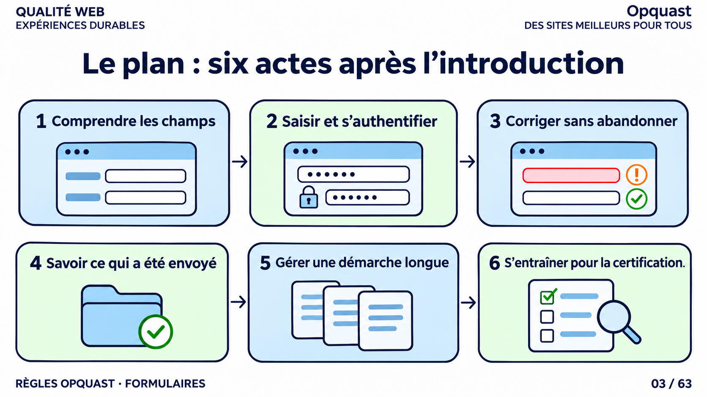
Une femme marche avec des dossiers jaunes devant deux étagères. Six panneaux sont disposés en deux rangées de trois, avec des flèches entre les panneaux de chaque rangée. Ils montrent un champ accompagné d’une information, une connexion, une erreur, une confirmation, plusieurs écrans d’étapes et un carnet de cases cochées. Un dossier jaune est posé devant chacun.
Textes affichés dans l’image
- QUALITÉ WEB
- EXPÉRIENCES DURABLES
- Opquast
- DES SITES MEILLEURS POUR TOUS
- Le plan : six actes après l’introduction
- 1 Comprendre les champs
- 2 Saisir et s’authentifier
- 3 Corriger sans abandonner
- 4 Savoir ce qui a été envoyé
- 5 Gérer une démarche longue
- 6 S’entraîner pour la certification.
- RÈGLES OPQUAST · FORMULAIRES
- 03 / 63
Un plan qui suit l’utilisateur
- Le plan ne suit pas l’ordre des numéros, mais celui d’une personne qui remplit un dossier.
- Elle doit d’abord comprendre les champs, puis saisir et s’authentifier.
- Elle corrige ensuite après un refus, vérifie ce qui a été envoyé et gère une démarche en plusieurs étapes.
- Le dernier acte sert à s’entraîner : règles transversales, méthode de contrôle et questions d’évaluation.
Pourquoi ne pas suivre les numéros
- Des numéros isolés ne disent pas à quel moment du parcours une règle intervient.
- Chaque acte regroupe les règles qui protègent un même moment de la démarche.
- Les dernières règles de la rubrique se travaillent ainsi avec les champs et l’authentification, et non après la démarche longue.
- Chaque acte s’ouvre sur son nom et se termine par une distinction ou un point d’entraînement.
Mémo oral
- Six actes, un seul parcours.
Transition
- Pour relier ces six actes, un même dossier va nous accompagner du début à la fin.
Slide 4 - Le fil rouge : un dossier « Mon Atelier » en cinq moments
Une femme utilise un portable à une table où sont posés des feuilles et un dossier jaune. À sa droite, cinq panneaux reliés par des flèches rouges représentent la préparation, la compréhension des champs, la saisie, la correction et la validation avec reprise. Leurs fenêtres contiennent respectivement un document à télécharger, un champ rouge, un champ actif avec curseur, une alerte et une coche avec des flèches circulaires.
Textes affichés dans l’image
- QUALITÉ WEB
- EXPÉRIENCES DURABLES
- Opquast
- DES SITES MEILLEURS POUR TOUS
- Le fil rouge : un dossier « Mon Atelier » en cinq moments
- 1 Préparer
- 2 Comprendre les champs
- 3 Saisir
- 4 Corriger
- 5 Valider et reprendre.
- RÈGLES OPQUAST · FORMULAIRES
- 04 / 63
Un seul dossier pour tout le parcours
- Nous suivrons une démarche fictive appelée Mon Atelier.
- On prépare un dossier, on crée éventuellement un accès, on renseigne les informations, on corrige un rejet et on vérifie l’envoi.
- Ce fil rouge évite trente exemples sans rapport entre eux.
Les défauts qui n’apparaissent qu’en parcours
- Une bonne page isolée ne suffit pas à rendre la démarche complète utilisable.
- Le découpage en moments fait apparaître les erreurs qui ne se voient qu’en suivant le parcours.
- Pour chaque défaut, la première question est de savoir s’il survient avant, pendant ou après la saisie.
- Une règle d’une autre thématique, comme la navigation, la sécurité ou le contact, peut aussi concerner le formulaire.
Mémo oral
- Le parcours est notre sommaire.
Transition
- Avant d’entrer dans le parcours, fixons les mots qui nomment et expliquent un champ.
Slide 5 - Glossaire 1/3 : ce qui nomme et explique un champ
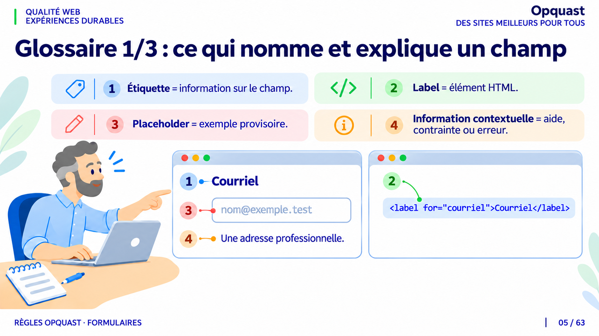
Un homme barbu aux cheveux gris pointe les exemples depuis son portable. Quatre bandeaux colorés définissent les termes, chacun avec un numéro et un pictogramme. Dans la fenêtre de gauche, les repères 1, 3 et 4 désignent l’étiquette Courriel, le placeholder et l’aide placée sous le champ. Dans celle de droite, le repère 2 pointe le code HTML du label.
Textes affichés dans l’image
- QUALITÉ WEB
- EXPÉRIENCES DURABLES
- Opquast
- DES SITES MEILLEURS POUR TOUS
- Glossaire 1/3 : ce qui nomme et explique un champ
- 1
- Étiquette = information sur le champ.
- 2
- Label = élément HTML.
- 3
- Placeholder = exemple provisoire.
- 4
- Information contextuelle = aide, contrainte ou erreur.
- 1
- Courriel
- 2
- <label for="courriel">Courriel</label>
- 3
- nom@exemple.test
- 4
- Une adresse professionnelle.
- RÈGLES OPQUAST · FORMULAIRES
- 05 / 63
Quatre mots qui se confondent
- L’étiquette dit ce qu’on attend dans le champ : c’est une fonction.
- Label est l’une des techniques HTML qui permettent d’associer cette étiquette au champ.
- Le placeholder affiche un indice provisoire dans le champ, mais il n’est pas l’étiquette.
- Une information contextuelle précise un format, une limite ou une erreur.
Le risque de confusion
- Un exemple qui s’efface à la saisie ou une aide mal reliée peuvent être pris à tort pour une véritable étiquette.
- Ces quatre termes permettent d’analyser séparément le texte visible et la sémantique HTML.
- La V5 ne contient pas de règle dédiée au placeholder : utilisé comme seule étiquette, il relève de la règle de l’étiquette associée dans le code.
- En certification, on identifie d’abord l’information qui manque, puis on se demande si le problème est visuel ou programmatique.
Mémo oral
- Étiquette ≠ label ≠ placeholder ≠ aide.
Transition
- D’autres composants aident à la saisie, à condition que leur état reste compréhensible.
Slide 6 - Glossaire 2/3 : aides de saisie et états de contrôle
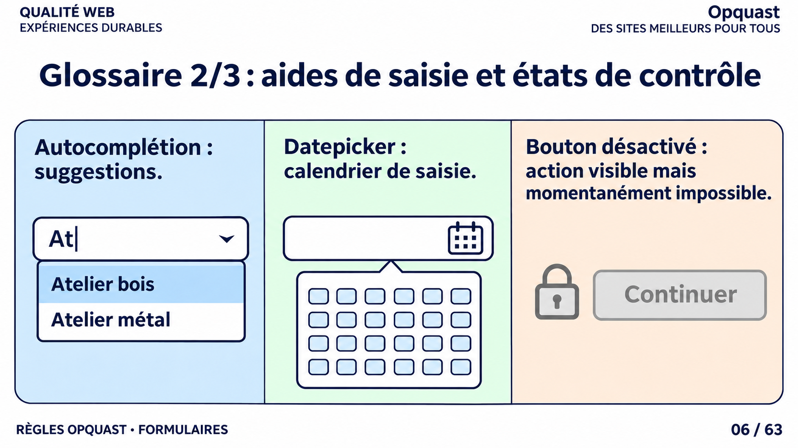
Une personne aux cheveux bruns, en sweat gris et avec un sac à dos, touche une tablette à une table avec un carnet et un stylo. Trois fenêtres occupent la droite : une saisie At propose Atelier bois et Atelier métal, un calendrier montre une case bleue, puis le bouton Continuer apparaît grisé. Les définitions sont placées en haut de chaque fenêtre.
Textes affichés dans l’image
- QUALITÉ WEB
- EXPÉRIENCES DURABLES
- Opquast
- DES SITES MEILLEURS POUR TOUS
- Glossaire 2/3 : aides de saisie et états de contrôle
- Autocomplétion : suggestions.
- At
- Atelier bois
- Atelier métal
- Datepicker : calendrier de saisie.
- Bouton désactivé : action visible mais momentanément impossible.
- Continuer
- RÈGLES OPQUAST · FORMULAIRES
- 06 / 63
Trois composants du quotidien
- L’autocomplétion propose des valeurs pendant la saisie.
- Le datepicker affiche un calendrier, mais une saisie manuelle peut rester nécessaire.
- Un bouton peut être visuellement désactivé : l’action existe, mais elle est momentanément impossible.
Un état qui doit se comprendre
- Un composant pratique en apparence peut ralentir ou exclure si son état est incompréhensible.
- La difficulté d’un bouton désactivé ne tient pas seulement à son aspect.
- Les personnes qui utilisent un lecteur d’écran doivent pouvoir comprendre sa présence et son état.
- Pour Opquast, un champ qui propose des suggestions, y compris un champ de recherche, doit être signalé dans le code.
Mémo oral
- Suggérer, choisir, signaler l’état.
Transition
- Restent les mots qui décrivent l’avant-envoi, la démarche longue et le consentement.
Slide 7 - Glossaire 3/3 : consentement et démarche longue
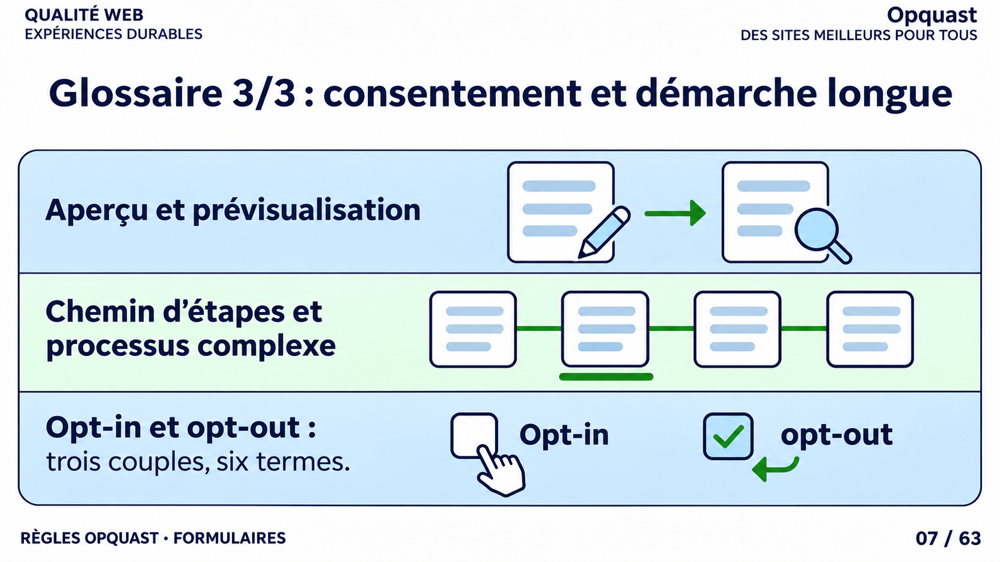
Une femme tient une feuille avec une vignette de paysage, à côté d’un portable et d’une seconde feuille sur la table. En haut, deux bandeaux nomment l’aperçu et le chemin d’étapes. À droite, trois fenêtres reliées par des flèches surmontent une ligne à trois jalons. En dessous, une case vide accompagne Opt-in et une case cochée accompagne opt-out.
Textes affichés dans l’image
- QUALITÉ WEB
- EXPÉRIENCES DURABLES
- Opquast
- DES SITES MEILLEURS POUR TOUS
- Glossaire 3/3 : consentement et démarche longue
- Aperçu et prévisualisation
- Chemin d’étapes et processus complexe
- Opt-in et opt-out :
- trois couples, six termes.
- Opt-in
- opt-out
- RÈGLES OPQUAST · FORMULAIRES
- 07 / 63
Trois couples de notions
- Aperçu et prévisualisation désignent l’examen du résultat avant l’envoi, deux notions très proches.
- Un processus complexe est une démarche en plusieurs étapes.
- Le chemin d’étapes indique leur succession et la position courante.
- L’opt-in signifie accepter par une action explicite, l’opt-out signifie devoir agir pour s’opposer.
Savoir qui garde le contrôle
- Confondre ces notions empêche de savoir quand l’utilisateur a réellement le contrôle.
- Le vocabulaire permet d’expliquer le moment de la décision et la nature du consentement.
- Le glossaire Opquast définit l’opt-in comme un consentement explicite, généralement requis pour le traitement de données personnelles, et l’opt-out comme un consentement implicite.
Mémo oral
- Prévoir, se situer, choisir.
Transition
- Avec ce vocabulaire en place, il reste une méthode pour lire chaque règle.
Slide 8 - Une règle se lit avec trois questions
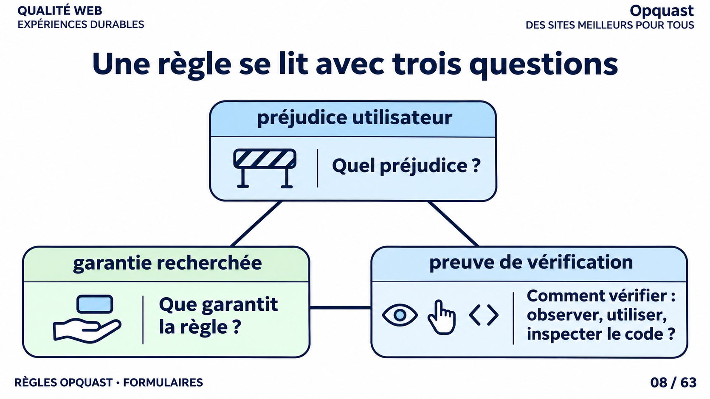
Un homme barbu travaille sur un portable, près d’un carnet reprenant trois pictogrammes. Un grand écran central présente un champ au contour rouge avec un curseur. Trois traits le relient à des encadrés : l’exclamation rouge du préjudice en haut à gauche, la coche verte de la garantie en haut à droite et la loupe bleue de la preuve en bas. Chaque encadré porte la question correspondante.
Textes affichés dans l’image
- QUALITÉ WEB
- EXPÉRIENCES DURABLES
- Opquast
- DES SITES MEILLEURS POUR TOUS
- Une règle se lit avec trois questions
- préjudice utilisateur
- Quel préjudice ?
- garantie recherchée
- Que garantit la règle ?
- preuve de vérification
- Comment vérifier : observer, utiliser, inspecter le code ?
- RÈGLES OPQUAST · FORMULAIRES
- 08 / 63
Trois questions constantes
- Premièrement, quel ennui concret subit la personne ?
- Deuxièmement, quelle maîtrise la règle lui rend-elle ?
- Troisièmement, comment le vérifier ?
Choisir la bonne preuve
- Parfois il suffit de voir, parfois il faut réaliser une saisie erronée, parfois il faut inspecter le code.
- Une conclusion tirée d’un seul indice visuel ou technique peut être erronée.
- La vérification combine le rendu, le parcours et le code, selon ce que demande la règle.
- Opquast et le RGAA sont distincts : une règle Opquast vérifiée n’emporte aucun verdict RGAA.
Mémo oral
- Préjudice → garantie → contrôle.
Transition
- Premier acte du parcours : comprendre à quoi sert chaque champ.
Slide 9 - À quoi sert ce champ ?
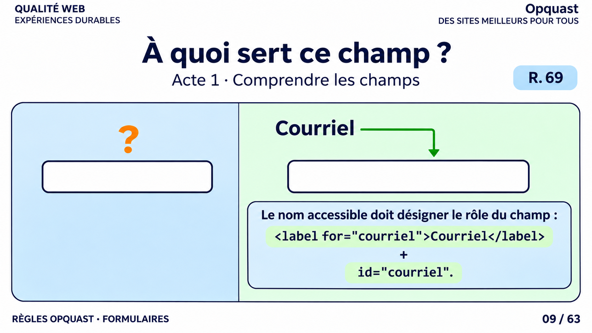
Un homme portant un casque utilise un portable devant une étagère et des plantes. Deux fenêtres se succèdent : le champ de gauche est surmonté d’un point d’interrogation rouge ; celui de droite porte l’étiquette Courriel. Une flèche bleue les relie. Sous les fenêtres, un encadré montre le label et l’identifiant courriel, dont les valeurs sont entourées et reliées par un trait.
Textes affichés dans l’image
- QUALITÉ WEB
- EXPÉRIENCES DURABLES
- Opquast
- DES SITES MEILLEURS POUR TOUS
- À quoi sert ce champ ?
- Acte 1 · Comprendre les champs
- R. 69
- ?
- Courriel
- Le nom accessible doit désigner le rôle du champ :
- <label for="courriel">Courriel</label>
- +
- id="courriel".
- RÈGLES OPQUAST · FORMULAIRES
- 09 / 63
Règles Opquast de la slide
Deux cases sans indication
- Premier acte : comprendre les champs, avant même de saisir quoi que ce soit.
- Dans le dossier Mon Atelier, imaginons deux cases vides, sans aucune indication.
- L’utilisateur voit des champs, mais il ne connaît pas les données attendues.
Impact pour l’utilisateur
- La personne ignore ce qu’elle doit fournir.
- Avec un lecteur d’écran, le champ peut être annoncé sans rôle compréhensible.
Ce que garantit la règle
- Chaque champ est associé dans le code source à une étiquette qui lui est propre, par exemple un label dont l’attribut for reprend l’id du champ.
- Sans étiquette visible, un attribut aria-label ou aria-labelledby peut jouer ce rôle.
- Un clic sur l’étiquette qui place le curseur dans le champ donne un premier indice de cette association.
- Le contrôle porte aussi sur la pertinence du texte, qui demande un examen manuel, car un label présent n’est pas forcément pertinent.
- Un placeholder seul n’est pas une étiquette, et la position de l’étiquette à l’écran relève d’une autre règle.
Mémo oral
- Étiquette reliée dans le code : qui suis-je ?
Transition
- Une étiquette bien reliée ne dit pourtant pas tout ce que l’utilisateur doit savoir pour remplir le champ.
Slide 10 - Ce que l’étiquette ne suffit pas à dire
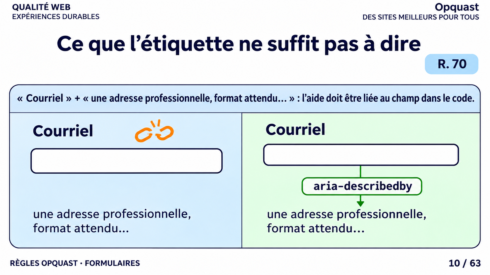
Un homme portant un casque travaille sur un portable. À droite, deux fenêtres présentent chacune un champ Courriel et une aide sous le champ. Dans la première, une ligne grise discontinue et une croix rouge marquent la séparation. Dans la seconde, un trait vert passe par le cartouche aria-describedby et relie le champ à l’aide, à côté d’une coche verte. Le principe est écrit dans un bandeau sous le titre.
Textes affichés dans l’image
- QUALITÉ WEB
- EXPÉRIENCES DURABLES
- Opquast
- DES SITES MEILLEURS POUR TOUS
- Ce que l’étiquette ne suffit pas à dire
- R. 70
- « Courriel » + « une adresse professionnelle, format attendu… » : l’aide doit être liée au champ dans le code.
- Courriel
- une adresse professionnelle, format attendu…
- Courriel
- aria-describedby
- une adresse professionnelle, format attendu…
- RÈGLES OPQUAST · FORMULAIRES
- 10 / 63
Règles Opquast de la slide
Une aide visible mais isolée
- Le champ Courriel porte bien son étiquette.
- Une consigne la complète : une adresse professionnelle, au format attendu.
- Si cette consigne n’est qu’un paragraphe placé à côté, rien ne la rattache au champ dans le code.
Impact pour l’utilisateur
- Une personne qui utilise un lecteur d’écran entend l’étiquette au moment de la saisie, mais pas la consigne.
- Elle découvre l’exigence seulement quand sa saisie est refusée.
Ce que garantit la règle
- Les informations qui complètent l’étiquette sont associées au champ dans le code source, souvent avec l’attribut aria-describedby.
- Quand l’information concerne un groupe de champs, un regroupement par fieldset et legend peut jouer ce rôle.
- La règle porte sur ce rattachement dans le code, pas sur la position de l’aide à l’écran, qui relève d’une autre règle.
Mémo oral
- Aide reliée dans le code : quelle aide m’accompagne ?
Transition
- Une étiquette correctement codée peut pourtant rester loin de son champ à l’écran.
Slide 11 - Une étiquette peut être correcte… mais trop loin
Une femme tient un téléphone devant son portable, avec un carnet sur la table. Deux panneaux comparent les mêmes vues ordinateur et mobile. À gauche, des pointillés rouges mesurent l’espace entre Téléphone et le champ. Une flèche verte mène aux vues de droite, où l’étiquette est placée juste au-dessus du champ. Un bandeau rappelle le principe de proximité.
Textes affichés dans l’image
- QUALITÉ WEB
- EXPÉRIENCES DURABLES
- Opquast
- DES SITES MEILLEURS POUR TOUS
- Une étiquette peut être correcte… mais trop loin
- R. 77
- Le texte « Téléphone » doit paraître immédiatement associé à son champ, sur ordinateur comme sur mobile.
- Téléphone
- Téléphone
- Téléphone
- Téléphone
- RÈGLES OPQUAST · FORMULAIRES
- 11 / 63
Règles Opquast de la slide
Une étiquette juste, mais éloignée
- Le champ Téléphone est maintenant associé à son étiquette dans le code.
- À l’écran, pourtant, l’étiquette est affichée loin du champ, séparée par un grand espace vide.
- L’association dans le code est résolue, pas la proximité à l’écran.
Impact pour l’utilisateur
- L’utilisateur risque d’associer une information au mauvais champ.
- Il perd du temps à retrouver quelle étiquette décrit quel champ, en particulier sur mobile.
Ce que garantit la règle
- Chaque étiquette est visuellement rattachée au champ qu’elle décrit, sur toutes les tailles d’écran.
- Selon la fiche, la proximité immédiate est de l’ordre d’une trentaine de pixels au plus à gauche du champ et d’un interligne au-dessus.
- La position doit aussi être prévisible : au-dessus ou à gauche du champ, à droite ou à gauche pour une case radio ou à cocher.
- Une association for et id correcte relève de la règle de l’étiquette associée dans le code, mais ne prouve rien pour la proximité visuelle.
Mémo oral
- Étiquette proche à l’écran : où se trouve mon étiquette ?
Transition
- Ce qui vaut pour l’étiquette vaut aussi pour les aides et les messages d’erreur.
Slide 12 - Une aide éloignée est une aide perdue
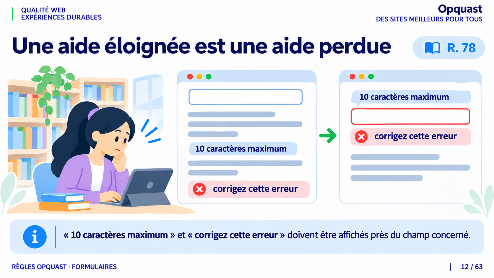
Une femme en veste violette consulte une tablette devant une bibliothèque. Deux fenêtres sont reliées par une flèche verte. Dans celle de gauche, plusieurs lignes séparent le champ, l’indication de longueur et le message d’erreur. Dans celle de droite, l’aide est juste au-dessus du champ rouge et le message avec une croix rouge juste en dessous. Le principe figure dans un bandeau inférieur.
Textes affichés dans l’image
- QUALITÉ WEB
- EXPÉRIENCES DURABLES
- Opquast
- DES SITES MEILLEURS POUR TOUS
- Une aide éloignée est une aide perdue
- R. 78
- « 10 caractères maximum » et « corrigez cette erreur » doivent être affichés près du champ concerné.
- 10 caractères maximum
- corrigez cette erreur
- 10 caractères maximum
- corrigez cette erreur
- RÈGLES OPQUAST · FORMULAIRES
- 12 / 63
Règles Opquast de la slide
Une erreur affichée trop loin
- Une aide ou un message d’erreur peuvent être présents, et même associés dans le code, tout en étant affichés loin du champ.
- Pour une personne qui agrandit fortement l’affichage, cette information est pratiquement perdue.
Impact pour l’utilisateur
- L’utilisateur ne sait plus quelle aide ou quelle erreur concerne quelle valeur.
- Avec une loupe d’écran ou un zoom important, l’information sort de son champ de vision.
Ce que garantit la règle
- Les informations contextuelles se rapportant à un champ, comme les aides, les contraintes et les messages d’erreur, lui sont visuellement rattachées.
- Le contrôle vérifie, à plusieurs tailles et niveaux de zoom, qu’elles sont affichées à proximité immédiate du champ et de son étiquette, sans espace vide important.
- Une aide reliée par aria-describedby relève de la règle de l’aide associée dans le code, qui ne garantit pas sa proximité à l’écran.
- La proximité de l’étiquette elle-même relève d’une autre règle, celle de l’étiquette visuellement rattachée.
Mémo oral
- Aide proche à l’écran : où est l’aide ?
Transition
- Ces quatre règles voisines forment un carré facile à retenir.
Slide 13 - Le carré d’or : 69 / 70 / 77 / 78
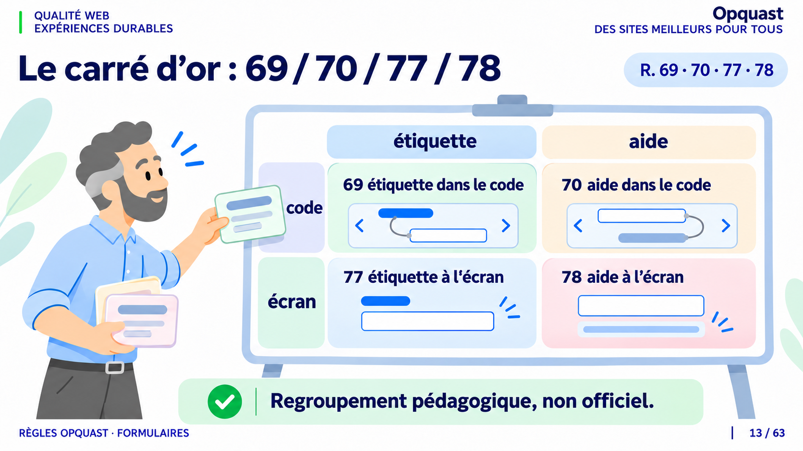
Un homme barbu tient plusieurs fiches devant un tableau sur chevalet. Le tableau croise les colonnes étiquette et aide avec les lignes code et écran. Les quatre cases portent les règles 69, 70, 77 et 78 et des schémas de champs : liens courbes dans le code, proximité des éléments à l’écran. Un bandeau vert sous le tableau précise le statut pédagogique du regroupement.
Textes affichés dans l’image
- QUALITÉ WEB
- EXPÉRIENCES DURABLES
- Opquast
- DES SITES MEILLEURS POUR TOUS
- Le carré d’or : 69 / 70 / 77 / 78
- R. 69 · 70 · 77 · 78
- étiquette
- aide
- code
- 69 étiquette dans le code
- 70 aide dans le code
- écran
- 77 étiquette à l’écran
- 78 aide à l’écran
- Regroupement pédagogique, non officiel.
- RÈGLES OPQUAST · FORMULAIRES
- 13 / 63
Règles Opquast de la slide
Deux questions pour quatre règles
- Première question : l’énoncé parle-t-il de l’étiquette ou d’une information qui la complète ?
- Seconde question : le défaut concerne-t-il la relation dans le code ou la proximité à l’écran ?
- Le croisement des deux réponses donne quatre cases : étiquette dans le code, aide dans le code, étiquette à l’écran, aide à l’écran.
Ce que protège chaque case
- L’étiquette associée dans le code permet de savoir quoi saisir, y compris avec un lecteur d’écran.
- L’aide associée dans le code permet d’entendre la consigne au moment de la saisie.
- L’étiquette proche à l’écran évite de rattacher un nom au mauvais champ.
- L’aide proche à l’écran évite de perdre une consigne ou une erreur, notamment avec le zoom.
Lire précisément l’énoncé
- En certification, remplacer « associé dans le code » par « visuellement proche » change complètement la règle.
- Un même champ peut enfreindre plusieurs de ces règles à la fois : il faut retenir celle que l’énoncé décrit précisément.
- Relation programmatique, on regarde le code ; proximité, on regarde l’écran.
- Ce carré est un regroupement pédagogique, pas une classification officielle.
Mémo oral
- Code : étiquette et aide reliées ; écran : étiquette et aide proches.
Transition
- Après le nom et l’aide, voyons ce que l’utilisateur doit savoir avant de répondre, à commencer par l’obligation de saisie.
Slide 14 - Obligatoire : dites-le avant de demander
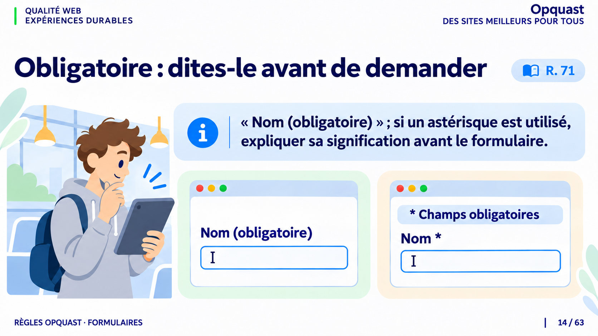
Une personne en sweat gris, avec un sac à dos, lit une tablette, une main au menton. Un bandeau explique le caractère obligatoire. Dessous, deux fenêtres montrent un champ actif avec curseur : à gauche, l’étiquette est Nom (obligatoire) ; à droite, la mention * Champs obligatoires précède l’étiquette Nom *.
Textes affichés dans l’image
- QUALITÉ WEB
- EXPÉRIENCES DURABLES
- Opquast
- DES SITES MEILLEURS POUR TOUS
- Obligatoire : dites-le avant de demander
- R. 71
- « Nom (obligatoire) » ; si un astérisque est utilisé, expliquer sa signification avant le formulaire.
- Nom (obligatoire)
- * Champs obligatoires
- Nom *
- RÈGLES OPQUAST · FORMULAIRES
- 14 / 63
Règles Opquast de la slide
Une obligation découverte trop tard
- Dans Mon Atelier, pourquoi apprendre que le téléphone est obligatoire seulement après le premier envoi ?
- Rien dans l’étiquette ne le signalait, et le formulaire le réclame pourtant à la validation.
Impact pour l’utilisateur
- La personne découvre après l’envoi qu’un champ était obligatoire.
- L’erreur aurait pu être évitée si l’information avait été donnée avant la saisie.
Ce que garantit la règle
- L’étiquette de chaque champ indique si la saisie est obligatoire, pour que chacun le sache avant de répondre.
- Si l’on utilise un astérisque, une légende placée avant le formulaire en explique le sens.
- L’attribut required seul ne constitue pas une indication visible suffisante.
- Le contrôle consiste aussi à valider le formulaire sans remplir un champ non signalé, pour vérifier qu’il est réellement facultatif.
Mémo oral
- Obligatoire signalé : dois-je répondre ?
Transition
- Savoir qu’il faut répondre ne suffit pas : encore faut-il connaître la forme attendue.
Slide 15 - Format : ne transformez pas une devinette en erreur
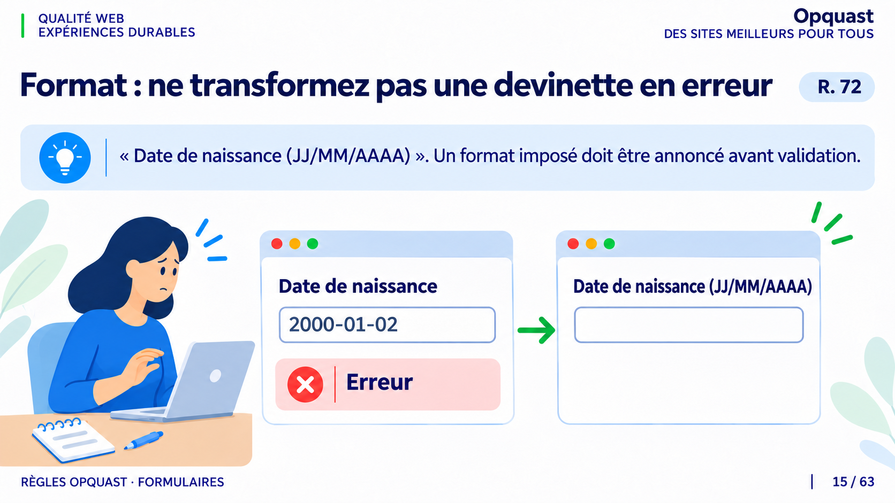
Une femme inquiète est assise devant un portable, près d’un carnet. Deux fenêtres sont reliées par une flèche verte. À gauche, le champ Date de naissance contient 2000-01-02 et un encadré rouge avec une croix affiche Erreur. À droite, le champ vide porte l’étiquette Date de naissance (JJ/MM/AAAA). Un bandeau sous le titre énonce le principe.
Textes affichés dans l’image
- QUALITÉ WEB
- EXPÉRIENCES DURABLES
- Opquast
- DES SITES MEILLEURS POUR TOUS
- Format : ne transformez pas une devinette en erreur
- R. 72
- « Date de naissance (JJ/MM/AAAA) ». Un format imposé doit être annoncé avant validation.
- Date de naissance
- 2000-01-02
- Erreur
- Date de naissance (JJ/MM/AAAA)
- RÈGLES OPQUAST · FORMULAIRES
- 15 / 63
Règles Opquast de la slide
Une date refusée sans explication
- La date de naissance est saisie avec des tirets, et le formulaire répond seulement par une erreur.
- La page exigeait pourtant un autre format, jour, mois et année séparés par des barres obliques.
- Ce n’est pas à l’utilisateur de deviner les séparateurs acceptés.
Impact pour l’utilisateur
- L’utilisateur doit deviner la syntaxe acceptée par le système.
- Il multiplie les essais, ou renonce faute d’information sur la saisie attendue.
Ce que garantit la règle
- Le format de saisie est indiqué pour les champs qui le nécessitent, par exemple dans l’étiquette.
- Le contrôle consiste à provoquer un rejet de format, puis à vérifier que l’étiquette associée au champ annonce ce format.
- Un champ de type date ne remplace pas systématiquement l’explication du format quand elle est nécessaire.
- Cette règle ne traite ni du caractère obligatoire, ni de la longueur maximale, ni du type HTML du champ.
Mémo oral
- Format annoncé : sous quelle forme ?
Transition
- Une valeur au bon format peut encore être refusée pour une simple question de majuscules.
Slide 16 - La casse : quand « ABC » n’est pas « abc »
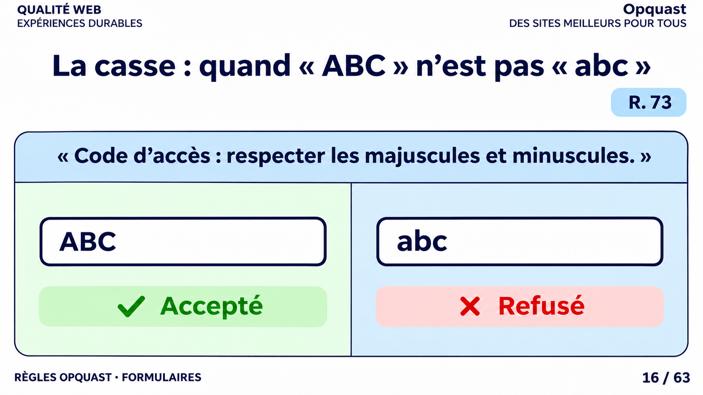
Une femme en veste violette utilise une tablette à une table avec deux livres, devant une bibliothèque. Une grande fenêtre affiche l’instruction sur les majuscules et minuscules. Deux champs sont disposés l’un au-dessus de l’autre : ABC est relié à une coche et au mot Accepté sur fond vert ; abc est relié à une croix et au mot Refusé sur fond rose.
Textes affichés dans l’image
- QUALITÉ WEB
- EXPÉRIENCES DURABLES
- Opquast
- DES SITES MEILLEURS POUR TOUS
- La casse : quand « ABC » n’est pas « abc »
- R. 73
- « Code d’accès : respecter les majuscules et minuscules. »
- ABC
- Accepté
- abc
- Refusé
- RÈGLES OPQUAST · FORMULAIRES
- 16 / 63
Règles Opquast de la slide
Un code refusé pour une question de casse
- Un code d’accès est accepté en majuscules, mais la même valeur en minuscules est refusée.
- Si le système distingue majuscules et minuscules, il doit le dire.
Impact pour l’utilisateur
- Une valeur pourtant plausible est rejetée sans explication compréhensible.
- L’utilisateur pense avoir rempli correctement le champ et doit le ressaisir, parfois plusieurs fois.
Ce que garantit la règle
- L’utilisateur est averti lorsqu’une saisie est sensible à la casse, dans l’étiquette associée au champ.
- Le contrôle consiste à saisir la même valeur en majuscules puis en minuscules, et à vérifier l’avertissement si l’une est rejetée.
- La règle n’impose pas que tous les champs soient insensibles à la casse.
- Le défaut n’est ni le format général, qui relève de la règle du format annoncé, ni la longueur, qui relève de celle de la longueur maximale.
- Selon l’avis d’expert du livre Opquast, cette règle compte particulièrement pour les captchas graphiques, les identifiants et les mots de passe.
Mémo oral
- Casse annoncée : les majuscules comptent-elles ?
Transition
- Reste une dernière contrainte à annoncer avant la saisie : le nombre maximal de caractères, avant qu’un texte ne soit tronqué.
Slide 17 - La longueur maximale : prévenir avant la troncature
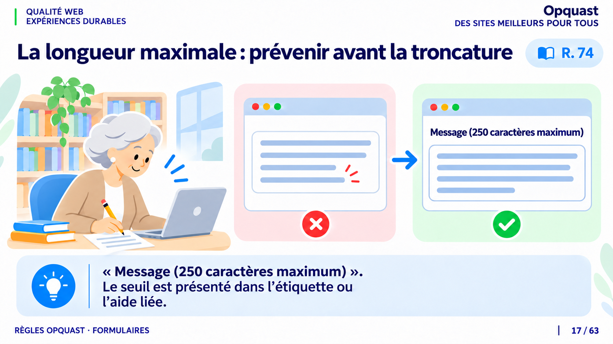
Une femme aux cheveux blancs écrit au crayon près de son portable et de deux livres. Deux fenêtres sont reliées par une flèche bleue. À gauche, une zone de texte sur fond rose est accompagnée de traits d’alerte et d’une croix rouge. À droite, l’étiquette Message (250 caractères maximum) précède la zone sur fond vert, avec une coche. Le bandeau inférieur explique où présenter le seuil.
Textes affichés dans l’image
- QUALITÉ WEB
- EXPÉRIENCES DURABLES
- Opquast
- DES SITES MEILLEURS POUR TOUS
- La longueur maximale : prévenir avant la troncature
- R. 74
- « Message (250 caractères maximum) ». Le seuil est présenté dans l’étiquette ou l’aide liée.
- Message (250 caractères maximum)
- RÈGLES OPQUAST · FORMULAIRES
- 17 / 63
Règles Opquast de la slide
Un long message coupé sans prévenir
- Camille rédige un long commentaire pour son dossier Mon Atelier.
- Elle découvre seulement à la fin qu’il ne fallait pas dépasser 250 caractères.
Impact pour l’utilisateur
- Après un long effort de saisie, son texte peut être perdu, raccourci ou rejeté.
- Elle doit alors réécrire ou couper elle-même un message qu’elle croyait terminé.
Ce que garantit la règle
- La limite en nombre de caractères est annoncée avant la saisie, dans l’étiquette du champ ou dans une mention explicitement associée à celle-ci.
- Le contrôle compare la longueur réellement acceptée et l’indication donnée à la personne.
- Un compteur ne suffit que s’il indique le maximum et qu’il est associé au champ dans le code.
- La règle porte sur le nombre de caractères, pas sur la forme de la valeur, qui relève de la règle du format.
Mémo oral
- Longueur annoncée : combien de caractères ?
Transition
- Obligation, format, casse et longueur forment ensemble quatre questions à se poser avant toute saisie.
Slide 18 - Quatre questions à poser avant toute saisie
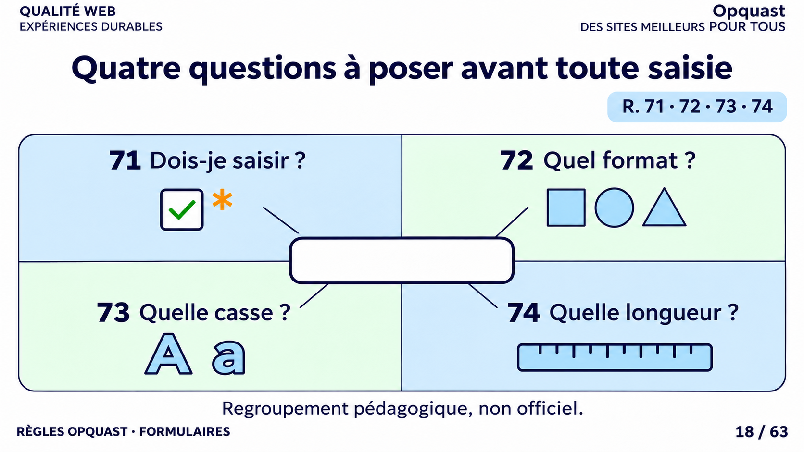
Un homme barbu, assis devant un portable, tient la fiche bleue 73 Quelle casse ?, une main au menton. Derrière lui, une fenêtre montre des champs et un interrupteur. Trois autres fiches entourent celle qu’il tient : 71 Dois-je saisir ?, 72 Quel format ? avec une liste et 74 Quelle longueur ? avec une double flèche. Le statut du regroupement figure dans un bandeau inférieur.
Textes affichés dans l’image
- QUALITÉ WEB
- EXPÉRIENCES DURABLES
- Opquast
- DES SITES MEILLEURS POUR TOUS
- Quatre questions à poser avant toute saisie
- R. 71 · 72 · 73 · 74
- 71 Dois-je saisir ?
- 72 Quel format ?
- 73 Quelle casse ?
- 74 Quelle longueur ?
- Regroupement pédagogique, non officiel.
- RÈGLES OPQUAST · FORMULAIRES
- 18 / 63
Règles Opquast de la slide
Quatre contraintes à connaître avant de taper
- Avant de saisir, la personne se pose quatre questions simples.
- Est-ce que je dois répondre, sous quel format, les majuscules comptent-elles, et combien de caractères puis-je écrire ?
- Retenez-les dans cet ordre : obligation, format, casse, longueur.
Ce que coûte une contrainte découverte trop tard
- Une restriction révélée seulement après l’envoi fait multiplier les tentatives, et parfois abandonner.
- Chaque contrainte doit donc être compréhensible au bon moment, c’est-à-dire avant la saisie.
Ne pas confondre les quatre dimensions
- La règle de l’obligation dit s’il faut répondre, celle du format décrit la forme attendue de la valeur.
- La règle de la casse prévient quand majuscules et minuscules sont distinguées, celle de la longueur annonce le nombre de caractères permis.
- Une même règle peut demander à la fois de contrôler le comportement de l’application et l’information présentée.
- Ce regroupement en quatre questions est un repère pédagogique, pas une classification officielle.
Mémo oral
- Obligation, format, casse, longueur.
Transition
- Annoncer la bonne contrainte ne suffit pas : le champ doit aussi porter le bon type HTML, ce qui change tout sur mobile.
Slide 19 - Le bon type HTML aide aussi sur mobile
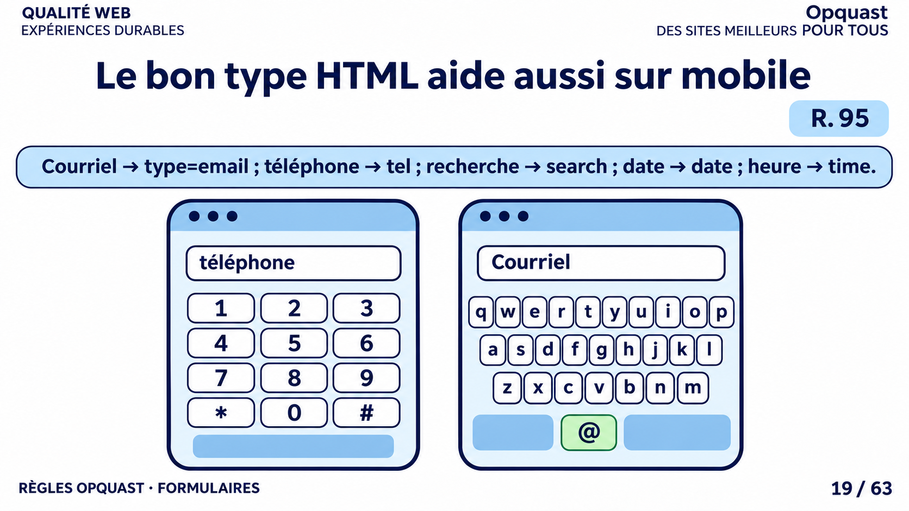
Une femme assise sur un banc utilise son téléphone dans un hall vitré. À droite, deux grandes fenêtres reliées par une flèche verte montrent un champ téléphone au-dessus d’un pavé numérique, puis un champ Courriel au-dessus d’un clavier alphabétique dont la touche @ est mise en évidence. Un bandeau inférieur associe les usages aux types HTML.
Textes affichés dans l’image
- QUALITÉ WEB
- EXPÉRIENCES DURABLES
- Opquast
- DES SITES MEILLEURS POUR TOUS
- Le bon type HTML aide aussi sur mobile
- R. 95
- Courriel → type=email ; téléphone → tel ; recherche → search ; date → date ; heure → time.
- téléphone
- 1 2 3
- 4 5 6
- 7 8 9
- * 0 #
- Courriel
- q w e r t y u i o p
- a s d f g h j k l
- z x c v b n m
- @
- RÈGLES OPQUAST · FORMULAIRES
- 19 / 63
Règles Opquast de la slide
Un numéro de téléphone tapé sur le mauvais clavier
- Sur mobile, saisir un numéro de téléphone dans un champ mal typé est inutilement compliqué.
- Un champ number, par exemple, n’est pas fait pour un numéro de téléphone et peut poser des problèmes.
Impact pour l’utilisateur
- Le clavier proposé est inadapté et la saisie devient plus lente et plus fragile.
- Certaines validations natives du navigateur restent inutilisées.
Ce que garantit la règle
- Les champs d’e-mail, d’URL, de téléphone, de nombre, de recherche, de mot de passe, d’heure et de date visent à porter le type HTML qui correspond à la donnée attendue.
- Le contrôle consiste à inspecter l’attribut type de chaque champ : email, url, tel, number, search, password, date ou time.
- Le type tel ne se remplace pas par number.
- Cette règle parle du type de donnée et du clavier adapté, alors que la règle de l’autocomplétion indique au navigateur la finalité du champ.
Mémo oral
- Type adapté : quel clavier et quel type ?
Transition
- Le type décrit la donnée, mais le remplissage automatique demande une autre indication, préparée elle aussi dans le code.
Slide 20 - L’autocomplétion se prépare dans le code
Une femme travaille sur un portable près d’un carnet. Une petite fenêtre montre trois profils ; le premier est sélectionné en bleu sous le pointeur. Une flèche bleue mène vers un formulaire Courriel, Prénom, Nom et Téléphone. Le champ Courriel est surligné et relié à un cartouche vert autocomplete="email". Un bandeau sous le titre présente les jetons.
Textes affichés dans l’image
- QUALITÉ WEB
- EXPÉRIENCES DURABLES
- Opquast
- DES SITES MEILLEURS POUR TOUS
- L’autocomplétion se prépare dans le code
- R. 97
- autocomplete="email", "given-name", "family-name", "tel" : les jetons doivent correspondre aux données.
- Courriel
- Prénom
- Nom
- Téléphone
- autocomplete="email"
- RÈGLES OPQUAST · FORMULAIRES
- 20 / 63
Règles Opquast de la slide
Des données déjà connues du navigateur
- Le navigateur peut remplir seul une adresse e-mail, un prénom ou un nom de famille.
- Il ne le fait correctement que s’il connaît la finalité de chaque champ.
Impact pour l’utilisateur
- Sans cette indication, la personne retape inutilement des données qu’elle a déjà fournies ailleurs.
- Elle peut aussi recevoir des propositions inadaptées, par exemple un nom à la place d’un courriel.
Ce que garantit la règle
- Les champs qui permettent l’autocomplétion visent à être signalés dans le code source, avec l’attribut autocomplete et un jeton normalisé.
- Le contrôle vérifie la présence de cet attribut, sa valeur et sa pertinence pour le champ, pas seulement l’apparition de suggestions.
- La règle couvre tout champ qui propose une autocomplétion, y compris un champ de recherche.
- Le type email décrit la nature du champ, alors que la valeur email de l’attribut autocomplete décrit sa finalité de remplissage.
Mémo oral
- Autocomplétion : quelles données puis-je préremplir ?
Transition
- Passons des champs libres aux listes de choix, en commençant par une liste trop longue pour être parcourue d’un seul regard.
Slide 21 - Une liste longue doit avoir des groupes
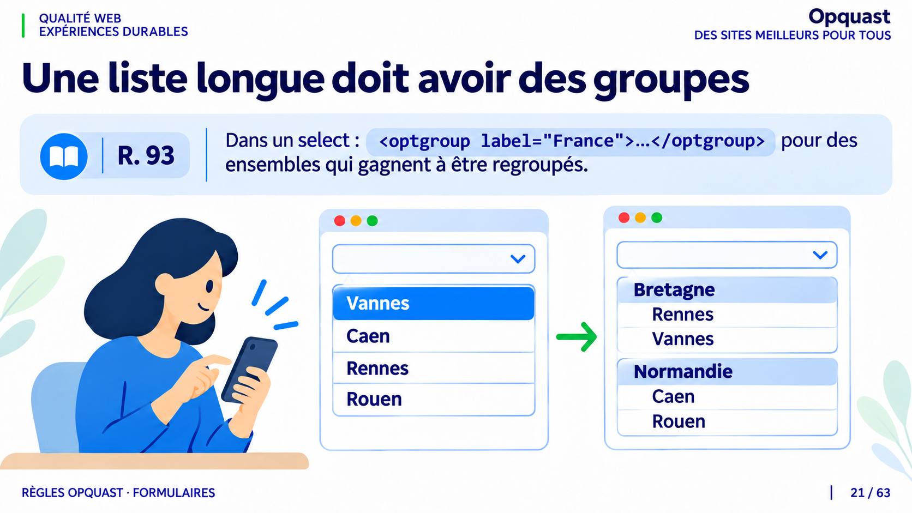
Une femme en haut bleu utilise un téléphone. Deux listes déroulées occupent la droite. La première aligne Vannes, Caen, Rennes et Rouen, avec Vannes sélectionné en bleu. Une flèche verte mène à la seconde, où Bretagne regroupe Rennes et Vannes et Normandie regroupe Caen et Rouen. Un bandeau sous le titre donne l’exemple de code optgroup.
Textes affichés dans l’image
- QUALITÉ WEB
- EXPÉRIENCES DURABLES
- Opquast
- DES SITES MEILLEURS POUR TOUS
- Une liste longue doit avoir des groupes
- R. 93
- Dans un select : <optgroup label="France">…</optgroup> pour des ensembles qui gagnent à être regroupés.
- Vannes
- Caen
- Rennes
- Rouen
- Bretagne
- Rennes
- Vannes
- Normandie
- Caen
- Rouen
- RÈGLES OPQUAST · FORMULAIRES
- 21 / 63
Règles Opquast de la slide
Soixante villes dans une seule liste
- Pour le dossier Mon Atelier, la personne doit choisir sa ville parmi une soixantaine de propositions.
- Si toutes les villes s’enchaînent à plat, rien n’aide à repérer la bonne zone.
Impact pour l’utilisateur
- Les options d’une liste longue deviennent difficiles à comprendre et à parcourir.
- Une personne qui navigue au clavier ou avec un lecteur d’écran doit parcourir les options une à une.
Ce que garantit la règle
- Les options qui peuvent être regroupées visent à l’être, avec des groupes structurés et nommés dans le code, par exemple optgroup et son attribut label.
- De fausses options vides servant de séparateurs restent un artifice purement visuel.
- La règle ne force pas à regrouper une petite liste : elle s’applique lorsque des options pourraient utilement l’être.
- Le classement des options à l’intérieur de la liste ou des groupes relève d’une autre règle, celle de l’ordre.
Mémo oral
- Groupes d’options : quels groupes ?
Transition
- Une liste bien groupée peut encore être difficile à parcourir si ses options ne suivent aucun ordre repérable.
Slide 22 - Une liste doit avoir un ordre repérable
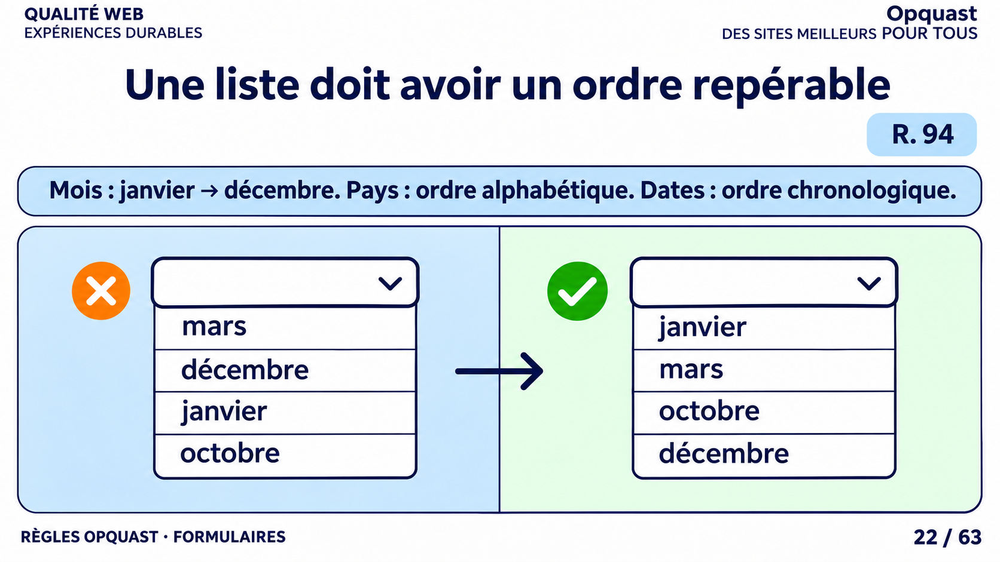
Une femme aux cheveux blancs pointe les listes, assise devant un portable à une table avec deux livres et un crayon. Deux listes à boutons radio sont reliées par une flèche bleue. Celle de gauche, sur fond rose avec une croix, affiche mars, décembre, janvier, octobre. Celle de droite, sur fond vert avec une coche, affiche janvier, mars, octobre, décembre. Le bandeau sous le titre donne trois exemples d’ordres.
Textes affichés dans l’image
- QUALITÉ WEB
- EXPÉRIENCES DURABLES
- Opquast
- DES SITES MEILLEURS POUR TOUS
- Une liste doit avoir un ordre repérable
- R. 94
- Mois : janvier → décembre. Pays : ordre alphabétique. Dates : ordre chronologique.
- mars
- décembre
- janvier
- octobre
- janvier
- mars
- octobre
- décembre
- RÈGLES OPQUAST · FORMULAIRES
- 22 / 63
Règles Opquast de la slide
Des mois proposés au hasard
- Voici une liste de mois : mars, décembre, janvier, octobre.
- Elle fonctionne techniquement, mais chercher un mois y devient inutilement coûteux.
Impact pour l’utilisateur
- Sans logique de classement, la personne passe trop de temps à chercher son option.
- Elle doit lire toute la liste au lieu d’aller directement à l’endroit attendu.
Ce que garantit la règle
- Les listes d’options visent à être présentées dans un ordre identifiable : alphabétique, chronologique, numérique ou thématique.
- Le contrôle consiste à ouvrir chaque liste et à vérifier que son ordre est reconnaissable.
- La règle n’impose pas l’ordre alphabétique partout : tout ordre identifiable et adapté au contenu peut convenir.
- La règle des groupes porte sur la structure, celle-ci sur l’ordre des éléments, y compris au sein des groupes, et les deux peuvent s’appliquer en même temps.
Mémo oral
- Ordre repérable : dans quel ordre ?
Transition
- Groupes, ordre, type et autocomplétion : quatre défauts à distinguer sur un même formulaire.
Slide 23 - Checkpoint 1 : listes, type, remplissage
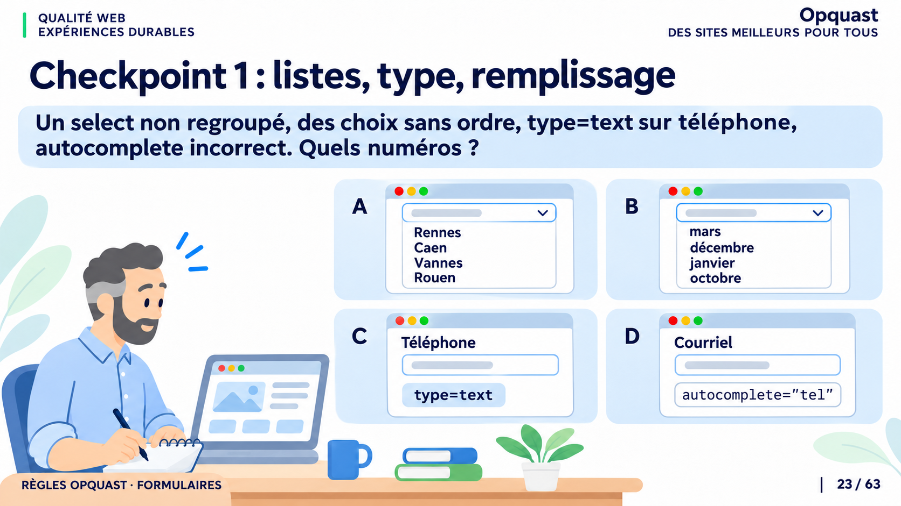
Un homme barbu, un stylo à la main au-dessus d’un carnet, regarde quatre fenêtres disposées en grille. A contient les villes Rennes, Caen, Vannes et Rouen ; B contient mars, décembre, janvier et octobre. C présente un champ Téléphone avec le code type=text ; D un champ Courriel avec autocomplete="tel". La question est inscrite dans un bandeau sous le titre.
Textes affichés dans l’image
- QUALITÉ WEB
- EXPÉRIENCES DURABLES
- Opquast
- DES SITES MEILLEURS POUR TOUS
- Checkpoint 1 : listes, type, remplissage
- Un select non regroupé, des choix sans ordre, type=text sur téléphone, autocomplete incorrect. Quels numéros ?
- A
- Rennes
- Caen
- Vannes
- Rouen
- B
- mars
- décembre
- janvier
- octobre
- C
- Téléphone
- type=text
- D
- Courriel
- autocomplete="tel"
- RÈGLES OPQUAST · FORMULAIRES
- 23 / 63
Règles Opquast de la slide
Quatre champs, quatre problèmes différents
- Sur ce formulaire, quatre champs ont l’air corrects au premier regard.
- A, la liste de villes ne représente pas ses groupes.
- B, les mois ne suivent aucun ordre.
- C, le type HTML du téléphone ne correspond pas à la donnée.
- D, le champ de courriel porte une indication d’autocomplétion qui ne correspond pas à sa finalité.
Les réponses attendues
- A relève de la règle des groupes d’options, que l’on contrôle en cherchant optgroup et son label dans le code.
- B relève de la règle de l’ordre des options, que l’on contrôle en ouvrant la liste pour y chercher une logique de classement.
- C relève de la règle du type de champ, que l’on contrôle en inspectant l’attribut type, ici attendu à tel.
- D relève de la règle de l’autocomplétion, que l’on contrôle en vérifiant la valeur de l’attribut autocomplete et sa pertinence pour le champ.
Ce qui distingue les quatre réponses
- Les quatre défauts touchent respectivement la structure, l’ordre, le type et la finalité de remplissage.
- Une apparence correcte peut cacher plusieurs problèmes de nature différente sur un même formulaire.
Transition
- Les champs sont compris, place à la saisie elle-même, en commençant par un geste banal : copier et coller.
Slide 24 - Copier et coller fait partie de la saisie normale
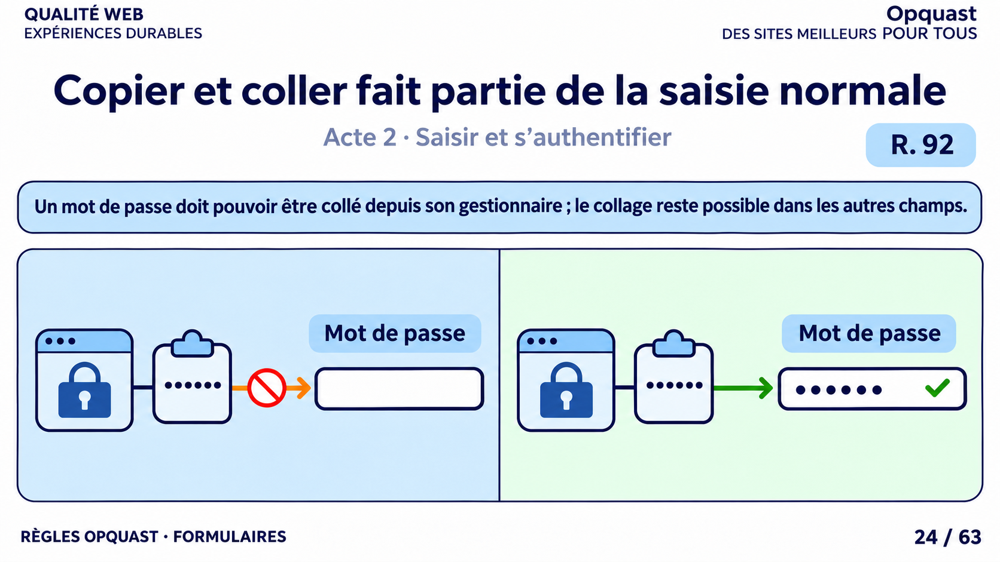
Un homme portant un casque utilise son portable. Une petite fenêtre contient une clé, un mot de passe masqué et un pictogramme de copie. Un trait bleu mène au champ vide Mot de passe, marqué d’une croix rouge. Une flèche verte conduit à la fenêtre de droite, où le champ contient des points et porte une coche verte. Le principe du collage figure dans le bandeau inférieur ; une pastille au-dessus du titre annonce l’acte 2.
Textes affichés dans l’image
- QUALITÉ WEB
- EXPÉRIENCES DURABLES
- Opquast
- DES SITES MEILLEURS POUR TOUS
- Copier et coller fait partie de la saisie normale
- Acte 2 · Saisir et s’authentifier
- R. 92
- Un mot de passe doit pouvoir être collé depuis son gestionnaire ; le collage reste possible dans les autres champs.
- Mot de passe
- Mot de passe
- RÈGLES OPQUAST · FORMULAIRES
- 24 / 63
Règles Opquast de la slide
Le collage interdit dans un champ
- Deuxième acte : saisir et s’authentifier.
- Dans une newsletter de 2024, Élie Sloïm rapporte les mots d’une amie aveugle : quand le collage est interdit, elle est totalement bloquée.
- Le même blocage empêche aussi d’utiliser un gestionnaire de mots de passe.
Impact pour l’utilisateur
- La personne doit retaper une valeur complexe, ou se retrouve totalement bloquée.
- Empêcher le collage d’un mot de passe incite aussi à choisir des mots de passe simples, donc moins solides.
Ce que garantit la règle
- La règle vise à permettre le copier-coller dans les champs de formulaire, y compris les champs de mot de passe.
- Le contrôle teste réellement copier, couper et coller, au clavier ou par le menu contextuel, puis cherche les scripts qui interceptent ces actions.
- L’applicabilité peut s’évaluer selon des contraintes de sécurité spécifiques, mais la règle reste décisive pour les champs de mot de passe.
- Elle ne se confond ni avec la prévention des erreurs à la création d’un mot de passe, ni avec l’affichage des caractères en clair.
Mémo oral
- Copier-coller : je peux coller.
Transition
- Coller un mot de passe ne dit pas encore comment éviter de le créer avec une faute de frappe.
Slide 25 - Créer un mot de passe sans le créer par erreur
Une femme utilise son téléphone à une table avec un portable, une tasse et un carnet. Un trait bleu relie le téléphone au formulaire Créer mon accès. Le premier champ de mot de passe contient des points ; le second, consacré à la confirmation, est encadré de rouge avec une exclamation. Un message rouge indique que les mots de passe ne correspondent pas. Le principe figure à gauche.
Textes affichés dans l’image
- QUALITÉ WEB
- EXPÉRIENCES DURABLES
- Opquast
- DES SITES MEILLEURS POUR TOUS
- Créer un mot de passe sans le créer par erreur
- R. 75
- À la création d’un mot de passe, proposer un mécanisme de prévention des fautes de saisie.
- Créer mon accès
- Mot de passe
- Confirmer le mot de passe
- Les mots de passe ne correspondent pas.
- RÈGLES OPQUAST · FORMULAIRES
- 25 / 63
Règles Opquast de la slide
Une faute de frappe invisible à la création
- On vient de créer un compte et le mot de passe est masqué.
- On se trompe d’un caractère, et personne ne le remarque.
Impact pour l’utilisateur
- La personne ne connaît pas le mot de passe réellement enregistré.
- Elle perd l’accès à son compte dès sa première tentative de connexion.
Ce que garantit la règle
- La création d’un mot de passe vise à inclure un mécanisme de prévention des erreurs de saisie.
- La fiche cite plusieurs pistes, comme l’affichage en clair ou un lien de connexion unique, mais son contrôle vérifie une double saisie comparée à la soumission.
- En audit, c’est ce contrôle officiel qui fait foi.
- Le collage ne doit pas être désactivé dans le champ de confirmation, ce qui relève de la règle du copier-coller.
- La question porte sur la création erronée, pas encore sur la possibilité générale d’afficher les caractères en clair.
Mémo oral
- Création du mot de passe : prévenir l’erreur.
Transition
- Afficher en clair ce que l’on tape est justement l’objet d’une autre règle, qui laisse la personne choisir de voir son mot de passe.
Slide 26 - Je choisis de voir mon mot de passe
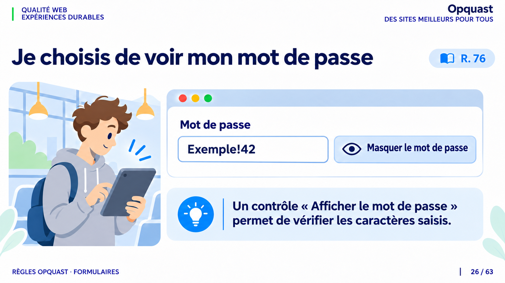
Une personne en sweat gris et avec un sac à dos touche sa tablette dans un intérieur vitré. À droite, une fenêtre présente le champ Mot de passe avec la valeur Exemple!42 en clair. Un bouton à pictogramme d’œil porte le texte Masquer le mot de passe. Un bandeau inférieur explique l’usage du contrôle d’affichage.
Textes affichés dans l’image
- QUALITÉ WEB
- EXPÉRIENCES DURABLES
- Opquast
- DES SITES MEILLEURS POUR TOUS
- Je choisis de voir mon mot de passe
- R. 76
- Un contrôle « Afficher le mot de passe » permet de vérifier les caractères saisis.
- Mot de passe
- Exemple!42
- Masquer le mot de passe
- RÈGLES OPQUAST · FORMULAIRES
- 26 / 63
Règles Opquast de la slide
Des points à la place des caractères
- Sur un clavier mobile, les erreurs de frappe sont fréquentes.
- Dans un champ de mot de passe masqué, la personne ne voit que des points.
Impact pour l’utilisateur
- Elle ignore ce qu’elle a réellement tapé, notamment sur un clavier virtuel ou avec une technologie d’assistance.
- Elle découvre son erreur seulement quand la connexion échoue.
Ce que garantit la règle
- Les caractères saisis dans un champ de mot de passe visent à pouvoir être affichés en clair, à la demande de l’utilisateur.
- Le contrôle actionne l’affichage puis le masquage, et vérifie que la valeur saisie reste intacte pendant la bascule.
- L’applicabilité s’estime selon les contextes où des impératifs spécifiques de sécurité s’imposent.
- Cette règle porte sur la visibilité des caractères, alors que la prévention des erreurs à la création et le copier-coller relèvent de deux autres règles.
Mémo oral
- Affichage en clair : je peux voir les caractères.
Transition
- Un mot de passe correct ne suffit pas toujours : il faut parfois un code reçu à part, et ce code peut expirer.
Slide 27 - Code expiré : pouvoir recommencer la double authentification
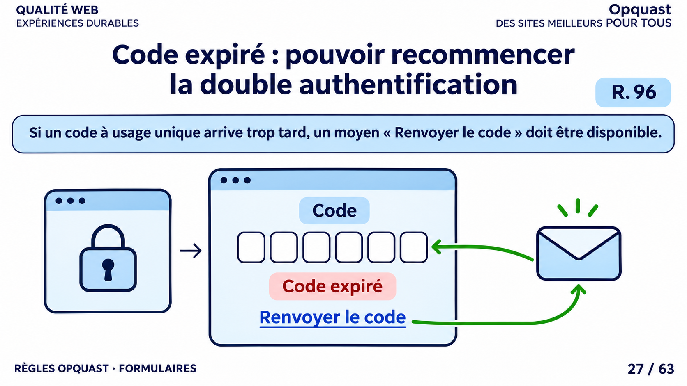
Une femme utilise un portable à une table où sont posés un livre et un téléphone. La grande fenêtre de droite contient un cadenas, le champ Code, puis une alerte rouge Code expiré et le bouton Renvoyer le code à flèches circulaires, sous un pointeur. Une flèche verte va d’une enveloppe vers le champ. Le principe est écrit dans un encadré à gauche.
Textes affichés dans l’image
- QUALITÉ WEB
- EXPÉRIENCES DURABLES
- Opquast
- DES SITES MEILLEURS POUR TOUS
- Code expiré : pouvoir recommencer la double authentification
- R. 96
- Si un code à usage unique arrive trop tard, un moyen « Renvoyer le code » doit être disponible.
- Code
- Code expiré
- Renvoyer le code
- RÈGLES OPQUAST · FORMULAIRES
- 27 / 63
Règles Opquast de la slide
Un code qui arrive trop tard
- Mon Atelier envoie un code de connexion à la personne.
- Le réseau est mauvais, et le code expire avant d’avoir pu être saisi.
Impact pour l’utilisateur
- S’il n’existe aucun moyen de renvoyer le code, la démarche est bloquée.
- La personne perd la possibilité d’entrer sur son compte après un simple échec de réception.
Ce que garantit la règle
- Les procédures d’authentification à double facteur visent à pouvoir être relancées.
- Le contrôle, mené sur une procédure de test autorisée, vérifie qu’il existe un moyen fonctionnel d’obtenir un nouveau code.
- Proposer une autre méthode d’authentification reste une recommandation complémentaire, alors que la règle vise la relance.
- Elle n’a rien à voir avec l’affichage du mot de passe : elle concerne la procédure à double facteur.
Mémo oral
- Renvoi du code : nouveau code, nouvelle chance.
Transition
- Reste un dernier obstacle sur ce parcours : un bouton grisé dont on ne comprend ni la présence ni l’état.
Slide 28 - Un bouton désactivé doit rester compréhensible
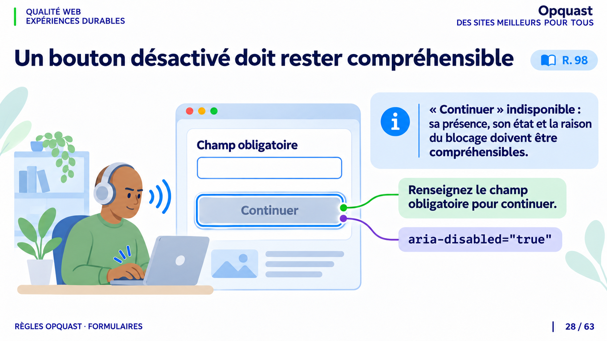
Un homme portant un casque utilise un portable ; des arcs bleus apparaissent près de son oreille. Une grande fenêtre montre un Champ obligatoire vide et le bouton Continuer grisé, entouré d’un contour bleu. Deux traits relient le bouton à l’instruction verte de remplissage et au code aria-disabled="true" sur fond violet. Un encadré supérieur rappelle le principe.
Textes affichés dans l’image
- QUALITÉ WEB
- EXPÉRIENCES DURABLES
- Opquast
- DES SITES MEILLEURS POUR TOUS
- Un bouton désactivé doit rester compréhensible
- R. 98
- « Continuer » indisponible : sa présence, son état et la raison du blocage doivent être compréhensibles.
- Champ obligatoire
- Continuer
- Renseignez le champ obligatoire pour continuer.
- aria-disabled="true"
- RÈGLES OPQUAST · FORMULAIRES
- 28 / 63
Règles Opquast de la slide
Un bouton gris que l’on ne trouve pas
- Le bouton Continuer est gris et ne peut pas être activé tant que le champ obligatoire est vide.
- Si le lecteur d’écran l’ignore, la personne ne comprend pas comment poursuivre.
Impact pour l’utilisateur
- Une personne qui utilise un lecteur d’écran ne sait pas qu’une action existe à cet endroit.
- Elle ne comprend pas non plus pourquoi elle ne peut pas avancer.
Ce que garantit la règle
- Les boutons désactivés visent à ne pas être masqués aux lecteurs d’écran, avec une présence et un état restitués quel que soit le mode d’accès.
- La solution proposée garde le bouton atteignable avec aria-disabled, bloque réellement son action par script et expose la raison du blocage, par exemple avec aria-describedby.
- Le contrôle officiel vérifie que les boutons désactivés en cours de saisie n’utilisent pas l’attribut disabled.
- Un bouton doté de l’attribut disabled échoue donc au contrôle de cette règle, car il sort du parcours au clavier et certains lecteurs d’écran ne l’annoncent pas.
Mémo oral
- Bouton désactivé : une action indisponible reste identifiable.
Transition
- Coller, voir, relancer, comprendre un bouton : rassemblons ces gestes avec la création du mot de passe pour ne plus les confondre.
Slide 29 - Le piège des mots de passe : cinq règles, cinq intentions
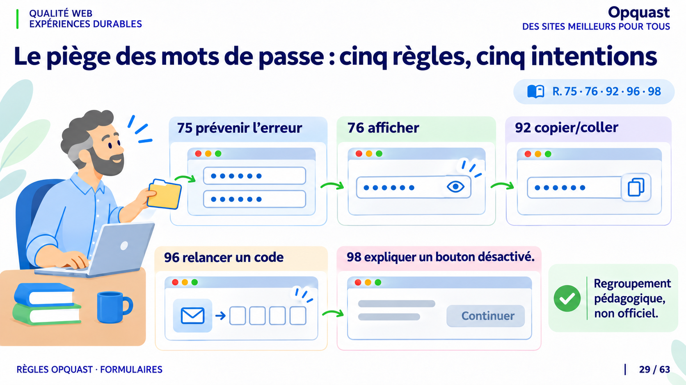
Un homme barbu tient un petit dossier jaune près de son portable. Cinq panneaux reliés par des flèches vertes montrent deux champs de confirmation, un champ avec un œil, un champ avec une icône de copie, une enveloppe vers quatre cases de code et un bouton Continuer grisé. Chaque panneau porte son numéro de règle et son intention. Un encadré vert précise le statut du regroupement.
Textes affichés dans l’image
- QUALITÉ WEB
- EXPÉRIENCES DURABLES
- Opquast
- DES SITES MEILLEURS POUR TOUS
- Le piège des mots de passe : cinq règles, cinq intentions
- R. 75 · 76 · 92 · 96 · 98
- 75 prévenir l’erreur
- 76 afficher
- 92 copier/coller
- 96 relancer un code
- 98 expliquer un bouton désactivé.
- Continuer
- Regroupement pédagogique, non officiel.
- RÈGLES OPQUAST · FORMULAIRES
- 29 / 63
Règles Opquast de la slide
Tout ranger sous « mot de passe accessible »
- L’un des grands pièges de cette rubrique est de tout mélanger sous une même étiquette.
- Une solution utile à un endroit ne remplace pas automatiquement un autre dispositif attendu.
Cinq capacités à des moments différents
- Créer un mot de passe sans faute relève de la règle de la prévention des erreurs à la création.
- Voir les caractères tapés relève de la règle de l’affichage en clair.
- Coller depuis un gestionnaire relève de la règle du copier-coller.
- Obtenir un nouveau code relève de la règle de la relance de la double authentification.
- Comprendre pourquoi Continuer est inactif relève de la règle des boutons désactivés.
Partir de l’action qui manque
- En certification, le bon réflexe consiste à partir de l’action qui manque réellement à la personne.
- Les règles de la rubrique Sécurité consacrées aux mots de passe complètent cette série sans la doubler.
- Ce regroupement en cinq intentions est un repère pédagogique, pas une classification officielle.
Mémo oral
- Prévenir, voir, coller, relancer, comprendre.
Transition
- Mettons ces cinq intentions à l’épreuve sur quatre scènes de connexion.
Slide 30 - Checkpoint 2 : choisissez la bonne règle
Une femme écrit dans un carnet tenu en main, près d’un portable, d’une tasse et de livres. Quatre panneaux en grille portent les cas A à D. A montre un collage barré vers un mot de passe masqué ; B un mot de passe masqué ; C un bouton Continuer grisé contourné par une flèche bleue discontinue ; D un seul champ de mot de passe. Les énoncés sont placés à gauche des exemples.
Textes affichés dans l’image
- QUALITÉ WEB
- EXPÉRIENCES DURABLES
- Opquast
- DES SITES MEILLEURS POUR TOUS
- Checkpoint 2 : choisissez la bonne règle
- A. Collage bloqué dans le champ mot de passe.
- B. Impossible d’afficher le mot de passe saisi.
- C. « Continuer » désactivé par l’attribut disabled, introuvable au clavier.
- Continuer
- D. Création de compte : un seul champ de mot de passe.
- RÈGLES OPQUAST · FORMULAIRES
- 30 / 63
Règles Opquast de la slide
Quatre scènes du parcours de connexion
- Première scène : impossible de coller son mot de passe depuis un gestionnaire.
- Deuxième scène : aucun moyen d’afficher les caractères saisis.
- Troisième scène : le bouton Continuer est désactivé par l’attribut disabled et disparaît quand on navigue au clavier.
- Dernière scène : la création de compte ne propose qu’un seul champ de mot de passe.
Les réponses attendues
- A relève de la règle du copier-coller, que l’on contrôle en essayant réellement de coller dans le champ.
- B relève de la règle de l’affichage en clair, que l’on contrôle en cherchant le bouton d’affichage puis en vérifiant qu’il fonctionne.
- C relève de la règle des boutons désactivés, dont le contrôle officiel vérifie l’absence de l’attribut disabled.
- D relève de la règle de la prévention des erreurs à la création, dont le contrôle officiel vérifie la double saisie.
Le geste qui manque
- Tout ramener à un mot de passe sécurisé masque ces quatre distinctions.
- Pour chaque scène, la bonne réponse part du geste qui manque à la personne : coller, voir, comprendre l’état du bouton, éviter l’erreur de création.
Mémo oral
- Partir du geste qui manque à la personne.
Transition
- Un formulaire bien conçu peut encore échouer : le vrai test commence quand la saisie est refusée.
Slide 31 - Le vrai test commence quand la saisie est refusée
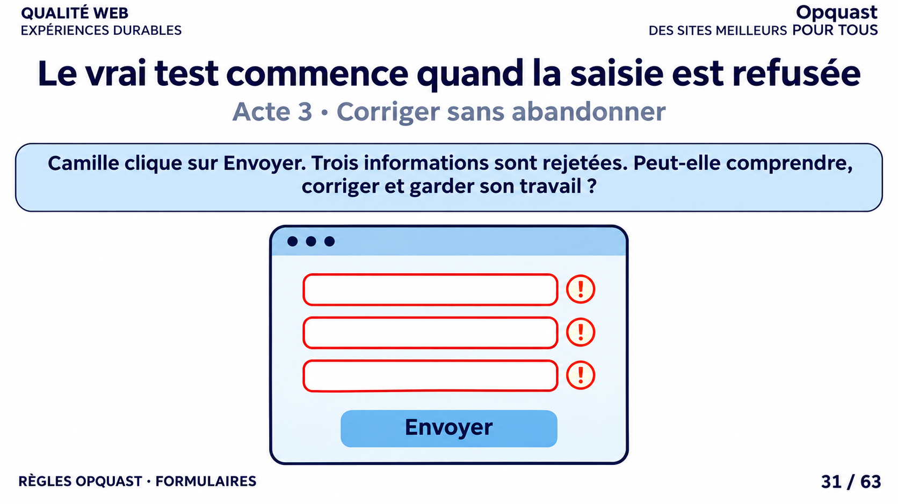
Une femme utilise un portable à une table avec une tasse, un carnet et un stylo. À droite, une grande fenêtre contient trois champs remplis, chacun posé sur une zone rose avec une croix rouge. Le deuxième contient des points de mot de passe. Le bouton Envoyer est en bas. À gauche, un encadré raconte la situation de Camille ; une pastille annonce l’acte 3.
Textes affichés dans l’image
- QUALITÉ WEB
- EXPÉRIENCES DURABLES
- Opquast
- DES SITES MEILLEURS POUR TOUS
- Le vrai test commence quand la saisie est refusée
- Acte 3 · Corriger sans abandonner
- Camille clique sur Envoyer. Trois informations sont rejetées. Peut-elle comprendre, corriger et garder son travail ?
- Envoyer
- RÈGLES OPQUAST · FORMULAIRES
- 31 / 63
Trois saisies refusées d’un coup
- Troisième acte : corriger sans abandonner.
- Camille vient de remplir plusieurs champs de son dossier et clique sur Envoyer.
- Trois saisies sont rejetées, et c’est là que commence le vrai travail de qualité.
Ce que coûte une erreur sans issue
- Si les erreurs ne sont ni localisables ni réparables, le formulaire devient une impasse.
- Un retour d’erreur utile aide au contraire la personne à se remettre en mouvement sans recommencer.
- Une simple bannière « Erreur » ne suffit pas à dire où corriger, pourquoi la saisie est refusée, ni si les réponses restent modifiables.
Quatre questions face au rejet
- La personne doit savoir quels champs sont concernés et pour quelle raison.
- Elle doit retrouver ses réponses encore modifiables.
- Le message d’erreur doit enfin être rédigé dans la langue du formulaire.
Mémo oral
- Où, pourquoi, encore modifiable, compréhensible ?
Transition
- Première question face au rejet : où se trouvent exactement les champs à corriger ?
Slide 32 - Une erreur doit désigner les champs concernés
Une femme travaille sur un portable. Une petite fenêtre derrière elle présente une alerte rouge au-dessus de trois champs. Une flèche bleue mène à un grand écran : le titre annonce trois champs à corriger, chacun est entouré de rouge et précédé de son numéro avec le mot erreur et une croix. Une main pointe le premier champ.
Textes affichés dans l’image
- QUALITÉ WEB
- EXPÉRIENCES DURABLES
- Opquast
- DES SITES MEILLEURS POUR TOUS
- Une erreur doit désigner les champs concernés
- R. 79
- Erreur : 3 champs à corriger
- Champ 1 — erreur
- Champ 2 — erreur
- Champ 3 — erreur
- RÈGLES OPQUAST · FORMULAIRES
- 32 / 63
Règles Opquast de la slide
Trois refus, une seule alerte
- Camille envoie son dossier et trois champs sont refusés.
- Seule une petite alerte apparaît en haut de la page.
Impact pour l’utilisateur
- Elle sait que l’envoi a échoué, mais elle ne sait pas où agir.
- Elle doit partir à la recherche de ses erreurs dans tout le formulaire.
Ce que garantit la règle
- La règle des champs en erreur vise à ce que les champs contenant les données rejetées soient indiqués à l’utilisateur.
- Le contrôle officiel attend au moins l’annonce des erreurs dans l’élément title de la page et le signalement de chaque champ erroné dans son étiquette.
- Pour aller plus loin en accessibilité, le recours à l’attribut aria-invalid est recommandé.
- Cette règle dit où se trouve le problème, pas pourquoi la saisie est refusée, ce qui relève de la règle de l’explication de l’erreur.
Mémo oral
- Champs en erreur : où corriger ?
Transition
- Savoir où corriger ne dit pas encore pourquoi la saisie a été refusée.
Slide 33 - Dire pourquoi, pas seulement « erreur »
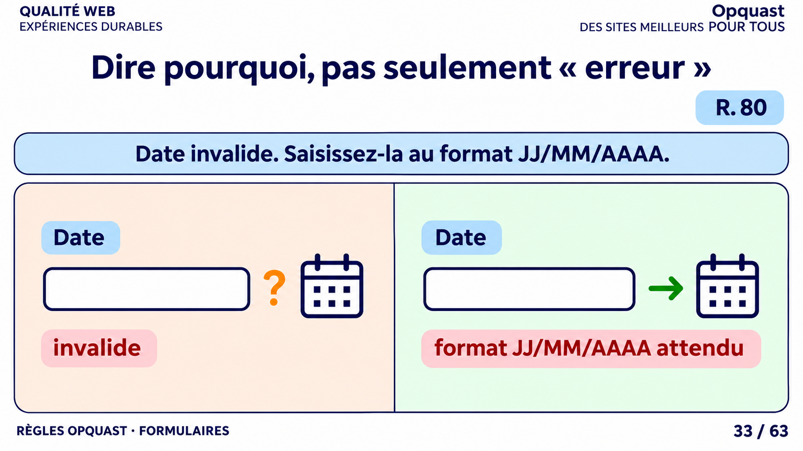
Une femme en veste violette utilise un ordinateur portable devant une bibliothèque, deux livres sur la table. Deux fenêtres Date sont reliées par une flèche verte. À gauche, le champ est suivi d’une croix rouge et du mot invalide. À droite, une coche verte accompagne le message format JJ/MM/AAAA attendu. Le bandeau supérieur formule le message complet.
Textes affichés dans l’image
- QUALITÉ WEB
- EXPÉRIENCES DURABLES
- Opquast
- DES SITES MEILLEURS POUR TOUS
- Dire pourquoi, pas seulement « erreur »
- R. 80
- Date invalide. Saisissez-la au format JJ/MM/AAAA.
- Date
- invalide
- Date
- format JJ/MM/AAAA attendu
- RÈGLES OPQUAST · FORMULAIRES
- 33 / 63
Règles Opquast de la slide
Une date refusée sans explication
- La date saisie par Camille est refusée.
- Le message se contente de dire « Erreur » ou « Date incorrecte ».
Impact pour l’utilisateur
- Camille sait qu’elle s’est trompée, mais elle ne sait pas comment reprendre son parcours.
Ce que garantit la règle
- La règle de l’explication de l’erreur vise à ce que les raisons du rejet soient indiquées à l’utilisateur, avec de quoi corriger.
- On la vérifie en provoquant plusieurs types d’échec : format erroné, champ vide, contrainte non respectée.
- Un message comme « Champ incorrect » localise peut-être l’erreur, mais n’en explique pas suffisamment la cause.
- La règle des champs en erreur indique quels champs reprendre, alors que celle-ci porte sur le contenu du message et sa capacité à guider la correction.
Mémo oral
- Raison de l’erreur : pourquoi ce rejet ?
Transition
- Un message clair perd sa valeur si la correction oblige à tout ressaisir.
Slide 34 - Ne faites pas payer deux fois la même saisie
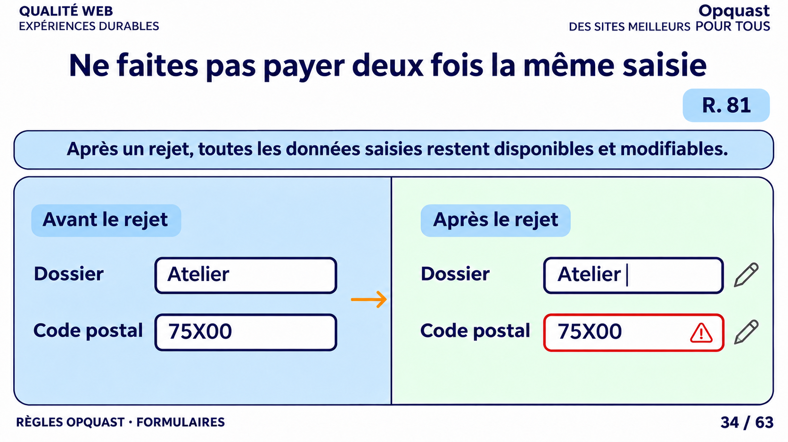
Une femme utilise un portable près d’un carnet. Deux formulaires montrent Dossier avec Atelier et Code postal avec 75X00. Celui de gauche est intitulé Avant le rejet ; une croix rouge et une flèche conduisent à Après le rejet. Les deux valeurs y sont conservées, avec des crayons de modification. Le champ Atelier est actif, entouré de bleu et muni d’un curseur.
Textes affichés dans l’image
- QUALITÉ WEB
- EXPÉRIENCES DURABLES
- Opquast
- DES SITES MEILLEURS POUR TOUS
- Ne faites pas payer deux fois la même saisie
- R. 81
- Après un rejet, toutes les données saisies restent disponibles et modifiables.
- Avant le rejet
- Dossier
- Atelier
- Code postal
- 75X00
- Après le rejet
- Dossier
- Atelier
- Code postal
- 75X00
- RÈGLES OPQUAST · FORMULAIRES
- 34 / 63
Règles Opquast de la slide
Dix minutes de saisie effacées
- Camille a passé dix minutes à renseigner son dossier.
- Un code postal incorrect provoque un rejet, et toutes ses réponses disparaissent.
Impact pour l’utilisateur
- Même avec un message d’erreur précis, elle doit ressaisir tout son dossier.
- Elle risque d’abandonner, ou d’introduire de nouvelles erreurs en recommençant.
Ce que garantit la règle
- La règle de la conservation des saisies après erreur vise à ce que toutes les données saisies puissent être modifiées après un rejet.
- Le contrôle officiel vérifie que le formulaire est réaffiché tel qu’il a été rempli.
- Conserver seulement les valeurs valides ne suffit donc pas.
- Pour le tester, on remplit plusieurs champs, on provoque une erreur, puis on modifie des réponses sans rapport avec l’erreur.
Mémo oral
- Saisies conservées : je ne recommence pas.
Transition
- Reste à savoir si le message d’erreur est rédigé dans la langue que l’utilisateur a sous les yeux.
Slide 35 - Le message d’erreur parle la langue du formulaire
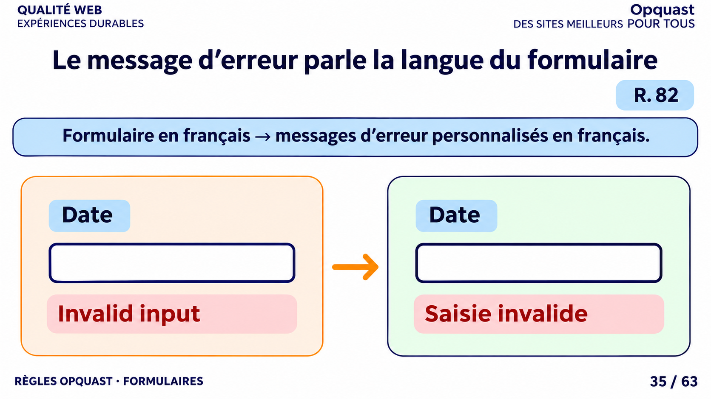
Une femme aux cheveux blancs utilise un portable, une main au menton, devant une bibliothèque. Deux fenêtres Date sont reliées par une flèche bleue. Chacune présente un champ rouge. À gauche, Invalid input apparaît sur fond rose avec une croix ; à droite, Saisie invalide apparaît sur fond vert avec une coche. Un bandeau inférieur rappelle l’accord de langue.
Textes affichés dans l’image
- QUALITÉ WEB
- EXPÉRIENCES DURABLES
- Opquast
- DES SITES MEILLEURS POUR TOUS
- Le message d’erreur parle la langue du formulaire
- R. 82
- Formulaire en français → messages d’erreur personnalisés en français.
- Date
- Invalid input
- Date
- Saisie invalide
- RÈGLES OPQUAST · FORMULAIRES
- 35 / 63
Règles Opquast de la slide
Un formulaire français, une erreur en anglais
- Le formulaire est entièrement en français.
- Pourtant, quand Camille se trompe, l’application affiche « Invalid input ».
Impact pour l’utilisateur
- L’utilisateur reçoit une consigne qu’il peut ne pas comprendre, ou qui rompt la cohérence linguistique du formulaire.
Ce que garantit la règle
- La règle de la langue des messages d’erreur vise à ce que les messages personnalisés soient exprimés dans la langue du formulaire.
- On déclenche les différents cas d’erreur, sans se contenter de repérer une traduction générique.
- Un message très précis rédigé dans une autre langue peut rester contraire à cette règle, car elle porte sur la langue et non sur la précision de la cause.
- Le comportement des messages natifs dépend aussi du navigateur, et la traduction demande de nombreux tests, notamment en changeant l’ordre des langues préférées du navigateur.
Mémo oral
- Langue du message : quelle langue ?
Transition
- Localiser, expliquer, conserver et parler la bonne langue forment ensemble la réponse à un refus.
Slide 36 - Quatre erreurs, quatre réponses : 79-82
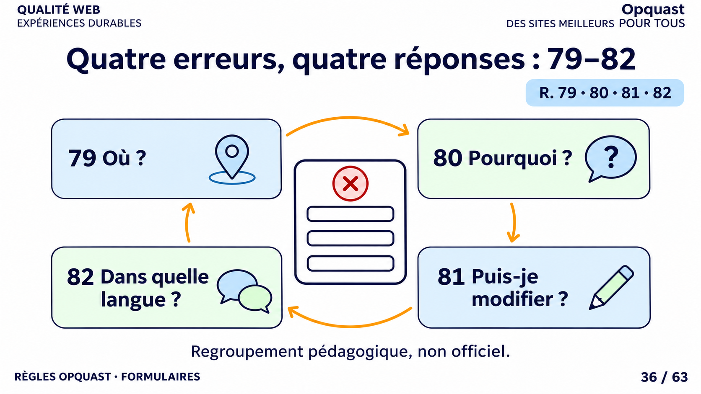
Un homme barbu présente deux des quatre fiches qui entourent un formulaire central. Les fiches 79 Où ?, 80 Pourquoi ?, 81 Puis-je modifier ? et 82 Dans quelle langue ? portent des pictogrammes de repère, croix, crayon et globe. Des traits colorés les relient au champ rouge, au message d’erreur et au champ modifiable du formulaire. Le statut du regroupement est indiqué en bas.
Textes affichés dans l’image
- QUALITÉ WEB
- EXPÉRIENCES DURABLES
- Opquast
- DES SITES MEILLEURS POUR TOUS
- Quatre erreurs, quatre réponses : 79–82
- R. 79 · 80 · 81 · 82
- 79 Où ?
- 80 Pourquoi ?
- 82 Dans quelle langue ?
- 81 Puis-je modifier ?
- Regroupement pédagogique, non officiel.
- RÈGLES OPQUAST · FORMULAIRES
- 36 / 63
Règles Opquast de la slide
Quatre questions après un refus
- Quand un envoi échoue, l’utilisateur se pose quatre questions.
- La règle des champs en erreur répond à la question où corriger.
- La règle de l’explication de l’erreur répond à la question pourquoi la saisie est refusée.
- La règle de la conservation des saisies répond à la question : puis-je encore modifier sans tout recommencer ?
- La règle de la langue des messages répond à la question : dans quelle langue me parle-t-on ?
Quatre risques qui peuvent coexister
- Sur un même formulaire, les quatre défauts peuvent apparaître ensemble.
- Un message peut être visible et précis, et rester insuffisant si les champs ont été effacés.
- Confondre information, assistance et conservation peut faire croire qu’une erreur est correctement traitée.
Ce que le regroupement ne remplace pas
- Ce cycle est un regroupement pédagogique, pas une classification officielle.
- En certification, les formulations sont souvent très proches : mieux vaut chercher le préjudice précis décrit qu’un mot-clé unique.
- Où, pourquoi, modifier, langue.
Transition
- Place à l’entraînement : trois refus de formulaire, trois diagnostics à poser.
Slide 37 - Checkpoint 3 : trois messages, trois diagnostics
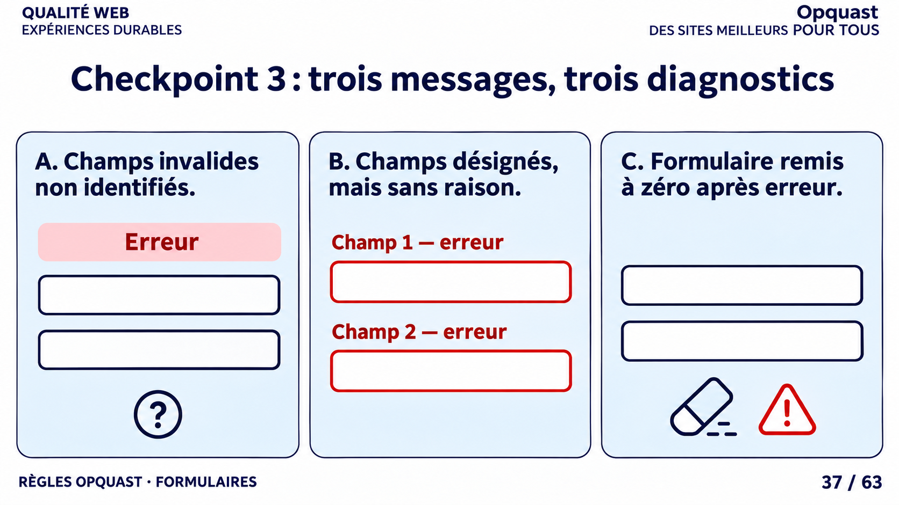
Un homme barbu écrit dans un carnet tenu en main, près d’un portable, de livres, d’une tasse et d’une plante. Trois panneaux A, B et C s’alignent à droite. A montre une alerte Erreur et deux champs remplis ; B désigne séparément Champ 1 et Champ 2 avec la mention erreur ; C montre deux champs vides, une flèche circulaire et une flèche discontinue de retour. Chaque diagnostic est écrit au-dessus.
Textes affichés dans l’image
- QUALITÉ WEB
- EXPÉRIENCES DURABLES
- Opquast
- DES SITES MEILLEURS POUR TOUS
- Checkpoint 3 : trois messages, trois diagnostics
- A. Champs invalides non identifiés.
- Erreur
- B. Champs désignés, mais sans raison.
- Champ 1 — erreur
- Champ 2 — erreur
- C. Formulaire remis à zéro après erreur.
- RÈGLES OPQUAST · FORMULAIRES
- 37 / 63
Règles Opquast de la slide
Trois refus à diagnostiquer
- Cas A : le système rejette l’envoi, mais ne désigne pas les champs concernés.
- Cas B : les champs sont pointés, mais les raisons du rejet ne sont pas indiquées.
- Cas C : après l’erreur, toutes les réponses ont disparu.
- Cas D, ajouté à l’oral : un message en anglais s’affiche sur un formulaire français.
Les réponses attendues
- Cas A : c’est la règle des champs en erreur, qui se contrôle en provoquant un refus puis en cherchant l’annonce dans le titre de la page et le signalement dans chaque étiquette.
- Cas B : c’est la règle de l’explication de l’erreur, qui se contrôle en testant plusieurs types d’échec et en lisant la précision des raisons données.
- Cas C : c’est la règle de la conservation des saisies, qui se contrôle en remplissant plusieurs champs, en provoquant une erreur, puis en vérifiant que le formulaire est réaffiché tel qu’il a été rempli.
- Cas D : c’est la règle de la langue des messages d’erreur, qui se contrôle en déclenchant les différents cas d’erreur et en vérifiant la langue des messages produits.
La méthode à garder
- Avant de nommer une règle, passez chaque cas au crible des quatre questions : où, pourquoi, modifier, langue.
- Une correction partielle ne garantit pas la poursuite du parcours.
- Le rejet se diagnostique en quatre dimensions.
Transition
- Une fois les erreurs corrigées, il reste à savoir exactement ce que l’on s’apprête à envoyer.
Slide 38 - Avant de confirmer, voir l’ensemble du dossier
Une femme aux cheveux blancs lit une feuille et écrit dans un carnet, près de deux livres. Trois fiches superposées, Identité, Coordonnées et Documents, sont reliées par des traits bleus qui convergent vers une fenêtre Mon Atelier. Celle-ci reprend les trois rubriques au-dessus du bouton Confirmer. Un bandeau inférieur énonce le principe ; une pastille annonce l’acte 4.
Textes affichés dans l’image
- QUALITÉ WEB
- EXPÉRIENCES DURABLES
- Opquast
- DES SITES MEILLEURS POUR TOUS
- Avant de confirmer, voir l’ensemble du dossier
- Acte 4 · Savoir ce qui a été envoyé
- R. 83
- Formulaire réparti sur plusieurs pages → récapitulatif global avant envoi définitif.
- Identité
- Coordonnées
- Documents
- Mon Atelier
- Identité
- Coordonnées
- Documents
- Confirmer
- RÈGLES OPQUAST · FORMULAIRES
- 38 / 63
Règles Opquast de la slide
Trois pages, un seul envoi
- Quatrième acte : savoir ce qui a été envoyé.
- Mon Atelier a demandé l’identité, l’adresse et les pièces justificatives sur trois pages successives.
- Juste avant l’envoi final, Camille doit pouvoir retrouver l’ensemble de ses réponses.
Impact pour l’utilisateur
- Sans vue d’ensemble, elle confirme des informations fournies au fil des étapes sans pouvoir les relire.
Ce que garantit la règle
- La règle du récapitulatif avant envoi vise à afficher un récapitulatif global avant l’envoi définitif d’un formulaire réparti sur plusieurs pages.
- Le point décisif est le moment : un écran de confirmation après l’envoi ne tient pas lieu de récapitulatif préalable.
- Elle porte sur le formulaire multipage, à ne pas confondre avec la vérification des contenus destinés à des espaces publics avant leur envoi, qui relève d’une autre règle.
- On la contrôle en exécutant le parcours complet et en cherchant le récapitulatif avant la validation définitive.
Mémo oral
- Récapitulatif : tout relire avant.
Transition
- Une fois le dossier envoyé, la page affichée ensuite ne doit pas devenir une impasse.
Slide 39 - Après l’envoi, ne pas créer une impasse
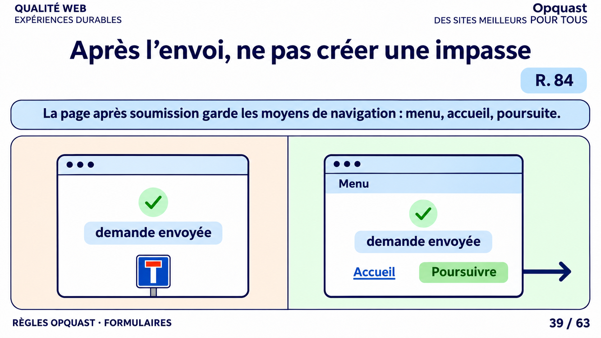
Une femme utilise un portable, une main au menton. Deux fenêtres portent une coche verte et le message demande envoyée. Une flèche verte les relie. La fenêtre de droite ajoute un Menu en haut ainsi que les boutons Accueil et Poursuivre en bas ; le pointeur vise Poursuivre. Le principe de navigation figure dans un bandeau sous le titre.
Textes affichés dans l’image
- QUALITÉ WEB
- EXPÉRIENCES DURABLES
- Opquast
- DES SITES MEILLEURS POUR TOUS
- Après l’envoi, ne pas créer une impasse
- R. 84
- La page après soumission garde les moyens de navigation : menu, accueil, poursuite.
- demande envoyée
- Menu
- demande envoyée
- Accueil
- Poursuivre
- RÈGLES OPQUAST · FORMULAIRES
- 39 / 63
Règles Opquast de la slide
Une confirmation sans issue
- Camille envoie son dossier et arrive sur une page qui annonce l’envoi.
- Cette page n’a ni menu, ni lien de retour, ni aucune issue claire.
Impact pour l’utilisateur
- Elle se retrouve bloquée, ou revient en arrière avec le bouton Retour du navigateur.
- Ce retour peut entraîner un second envoi du même formulaire.
Ce que garantit la règle
- La règle de la navigation après envoi vise à ce que la page affichée après la soumission permette de reprendre directement la navigation.
- On la contrôle en soumettant le formulaire, puis en vérifiant les liens et le menu de reprise sur la page obtenue.
- Elle ne porte pas sur le message de réussite lui-même, qui relève de la règle du résultat annoncé.
- Elle demande une attention particulière quand le parcours intègre un service externe.
Mémo oral
- Après l’envoi : je peux continuer.
Transition
- Pouvoir continuer ne dit pas encore si la demande a réellement abouti.
Slide 40 - Un formulaire doit répondre clairement « oui » ou « non »
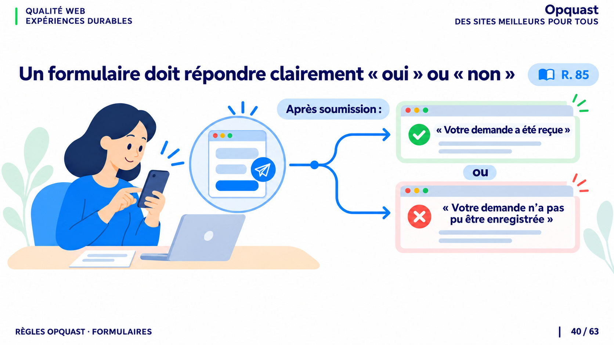
Une femme touche son téléphone, devant un portable et une feuille. Un agrandissement circulaire montre le formulaire et un avion en papier. Un trait bleu se divise en deux flèches vers les résultats possibles : en haut, une fenêtre verte avec coche annonce la réception ; en bas, une fenêtre rose avec croix annonce l’échec d’enregistrement. Le mot ou sépare les deux messages.
Textes affichés dans l’image
- QUALITÉ WEB
- EXPÉRIENCES DURABLES
- Opquast
- DES SITES MEILLEURS POUR TOUS
- Un formulaire doit répondre clairement « oui » ou « non »
- R. 85
- Après soumission :
- « Votre demande a été reçue »
- ou
- « Votre demande n’a pas pu être enregistrée »
- RÈGLES OPQUAST · FORMULAIRES
- 40 / 63
Règles Opquast de la slide
Un écran qui change, un doute qui reste
- Camille envoie son dossier et un nouvel écran s’affiche.
- Rien n’indique pourtant si le dossier a été enregistré.
Impact pour l’utilisateur
- Elle ne sait pas si l’action souhaitée s’est réellement produite.
Ce que garantit la règle
- La règle du résultat annoncé vise à ce que la soumission soit suivie d’un message indiquant la réussite ou l’échec de l’action.
- Ce retour doit correspondre à la réalité de l’opération, et une simple transition de page ne suffit pas.
- Selon l’avis de l’expert, ce résultat se vérifie dans le contenu et aussi dans le titre de la page.
- Ce message affiché sur le service n’est pas l’accusé de réception envoyé par courriel pour une demande d’information, qui relève d’une autre règle.
Mémo oral
- Résultat annoncé : suis-je arrivé au bout ?
Transition
- Récapitulatif, navigation et résultat se distinguent d’abord par le moment où ils interviennent.
Slide 41 - 83 / 84 / 85 : avant, après, résultat
Un homme barbu tient une liste de vérification et pointe le premier de trois portables posés sur une table. Le premier affiche une liste et le bouton soumettre, le deuxième un menu et deux flèches de navigation, le troisième une coche verte. Au-dessus, une ligne relie avant l’envoi, soumettre et après l’envoi. Trois cartouches sous les écrans associent chaque intention aux règles 83, 84 et 85.
Textes affichés dans l’image
- QUALITÉ WEB
- EXPÉRIENCES DURABLES
- Opquast
- DES SITES MEILLEURS POUR TOUS
- 83 / 84 / 85 : avant, après, résultat
- R. 83 · 84 · 85
- avant l’envoi
- soumettre
- après l’envoi
- 83 Avant : récapitulatif
- 84 Après : navigation possible
- soumettre
- 85 Après : succès ou échec explicite
- Regroupement pédagogique, non officiel.
- RÈGLES OPQUAST · FORMULAIRES
- 41 / 63
Règles Opquast de la slide
Le temps comme repère
- Pour distinguer ces trois règles, le meilleur repère est le moment.
- Avant de valider un formulaire en plusieurs pages, la règle du récapitulatif offre une vue globale des réponses.
- Après la soumission, la règle de la navigation permet de continuer depuis la page affichée.
- Après la soumission encore, la règle du résultat annonce sans ambiguïté la réussite ou l’échec.
Trois garanties indépendantes
- Une bonne page finale peut manquer de récapitulatif préalable.
- Une confirmation claire peut manquer de navigation, et un menu complet peut n’annoncer aucun résultat.
- Chacune de ces garanties se vérifie séparément : vérifier, poursuivre, connaître le résultat.
Le piège temporel
- Si une question propose un message de réussite pour répondre à l’absence de récapitulatif préalable, c’est un piège temporel.
- Ce découpage est un regroupement pédagogique, pas une classification officielle.
- Avant : récapitulatif ; après : navigation et résultat.
Transition
- Un message de réussite à l’écran ne couvre pas pour autant tout le suivi d’une demande.
Slide 42 - Un succès sur la page n’est pas un accusé de réception
Une femme tient un reçu marqué d’une coche au-dessus d’un dossier jaune, près d’un portable et d’un calendrier de bureau. À droite, quatre panneaux portent les numéros 10, 85, 110 et 108 : une page avec vignette, une page à coche verte, un reçu à coche et un calendrier à case bleue. Une ligne colorée à quatre jalons les relie. Le bandeau inférieur énonce les distinctions.
Textes affichés dans l’image
- QUALITÉ WEB
- EXPÉRIENCES DURABLES
- Opquast
- DES SITES MEILLEURS POUR TOUS
- Un succès sur la page n’est pas un accusé de réception
- 85 = résultat affiché · 110 = accusé de réception archivable · 108 = délai de réponse · 10 = vérifier avant publication publique.
- 10
- 85
- 110
- 108
- RÈGLES OPQUAST · FORMULAIRES
- 42 / 63
Règles Opquast de la slide
Un succès qui ne dit pas tout
- Le message « votre demande a été prise en compte » répond à la règle du résultat annoncé.
- Si Camille contacte un service, elle peut aussi avoir besoin d’un accusé de réception archivable.
- Elle peut encore avoir besoin de connaître le délai de réponse prévu.
Des règles venues d’autres rubriques
- L’accusé de réception de chaque demande d’information et l’indication des délais de réponse relèvent de la rubrique Identification et contact.
- Si Camille publie un avis ou une image, la règle de vérification des contenus destinés à des espaces publics avant leur envoi peut intervenir, dans la rubrique Contenus.
- Un formulaire traverse ainsi plusieurs rubriques Opquast, et la qualité du suivi dépend de plusieurs règles distinctes.
Le piège des numéros
- Un critère RGAA peut sembler porter la même numérotation qu’une règle Opquast, alors que les deux référentiels restent distincts.
- Résultat, reçu, délai et aperçu sont quatre informations différentes.
Transition
- Une démarche longue pose un autre défi : savoir dès le départ ce qu’il faudra fournir.
Slide 43 - Préparer les pièces avant le début du parcours
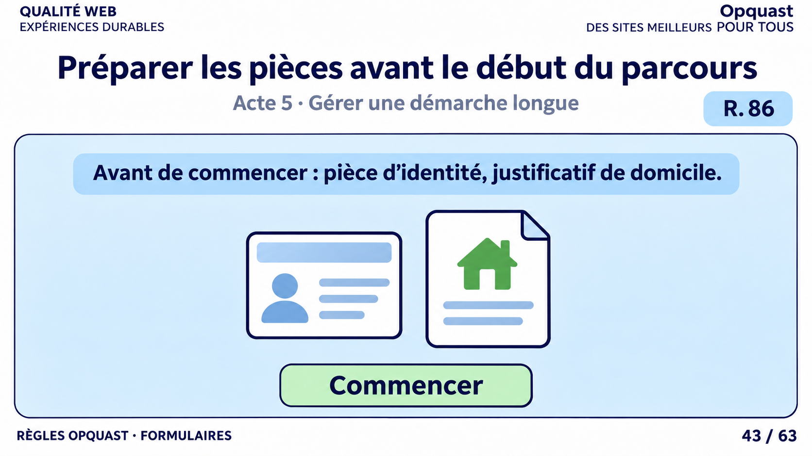
Une femme aux cheveux blancs coche une liste au crayon. Sur la table sont posés une carte d’identité, un justificatif représenté par une maison et un portable. Un agrandissement circulaire vert reprend les deux pièces avec une coche chacune ; une flèche bleue mène vers l’écran. Celui-ci énumère les pièces avant le bouton Commencer. Une pastille annonce l’acte 5.
Textes affichés dans l’image
- QUALITÉ WEB
- EXPÉRIENCES DURABLES
- Opquast
- DES SITES MEILLEURS POUR TOUS
- Préparer les pièces avant le début du parcours
- Acte 5 · Gérer une démarche longue
- R. 86
- Avant de commencer : pièce d’identité, justificatif de domicile.
- Commencer
- RÈGLES OPQUAST · FORMULAIRES
- 43 / 63
Règles Opquast de la slide
Un justificatif réclamé trop tard
- Cinquième acte : gérer une démarche longue, en plusieurs étapes.
- Si un justificatif est réclamé au quatrième écran sans avertissement, le processus s’interrompt.
Impact pour l’utilisateur
- La personne s’arrête à mi-parcours, faute d’avoir réuni un document qui ne lui avait pas été annoncé.
Ce que garantit la règle
- La règle des pièces à préparer vise à ce que l’utilisateur soit averti au début d’un processus complexe de la nature des données et documents exigés.
- On la contrôle sur la page d’entrée du processus, en cherchant la liste des informations et documents demandés avant la première étape.
- Elle est distincte de la règle de la liste des étapes : afficher les étapes ne suffit pas à signaler les pièces.
- Annoncer les pièces ne suffit pas non plus à indiquer une limite de temps, objet d’une autre règle.
Mémo oral
- Pièces annoncées : quoi préparer ?
Transition
- Connaître les pièces ne dit pas encore combien d’étapes attendent l’utilisateur.
Slide 44 - Un processus complexe montre toutes ses étapes
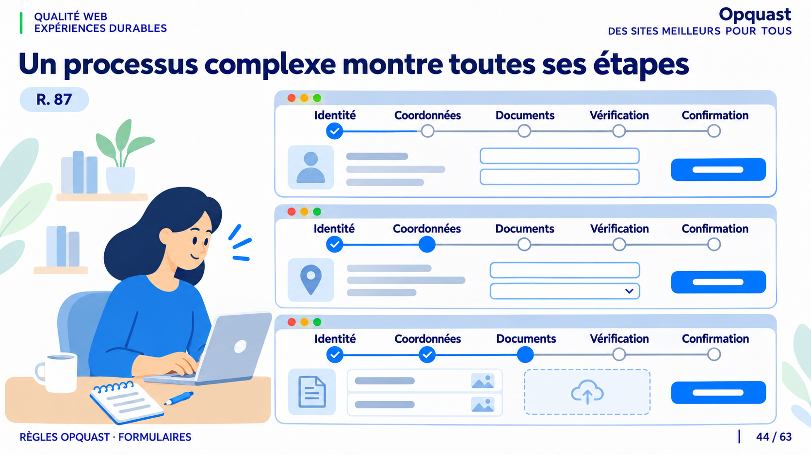
Une femme utilise un portable à une table avec une tasse et un carnet. À droite, trois fenêtres superposées montrent successivement des champs d’identité, de coordonnées et de documents. Chacune conserve les cinq jalons Identité, Coordonnées, Documents, Vérification et Confirmation. Les jalons accomplis sont cochés, et les vues suivantes font avancer le point bleu actif. La troisième présente des fichiers et une zone de dépôt.
Textes affichés dans l’image
- QUALITÉ WEB
- EXPÉRIENCES DURABLES
- Opquast
- DES SITES MEILLEURS POUR TOUS
- Un processus complexe montre toutes ses étapes
- R. 87
- Identité
- Coordonnées
- Documents
- Vérification
- Confirmation
- Identité
- Coordonnées
- Documents
- Vérification
- Confirmation
- Identité
- Coordonnées
- Documents
- Vérification
- Confirmation
- RÈGLES OPQUAST · FORMULAIRES
- 44 / 63
Règles Opquast de la slide
Continuer, mais vers quoi ?
- Au début du dossier, Camille ne voit qu’un bouton « Continuer ».
- Elle ignore combien de pages l’attendent et quelles actions viendront ensuite.
Impact pour l’utilisateur
- Elle ne sait pas ce qui lui reste à faire, ni si elle s’est engagée dans une démarche trop longue.
- Elle peut avoir le sentiment d’être piégée dans le parcours.
Ce que garantit la règle
- La règle de la liste des étapes vise à ce que les processus complexes soient accompagnés de la liste de leurs étapes, disponible à chaque étape.
- On la contrôle en parcourant chaque page et en vérifiant la présence de la liste intégrale.
- Un simple « 2 sur 5 » ne montre pas nécessairement la liste des étapes.
- Cette liste est distincte du repérage de l’étape en cours, qui relève de la règle voisine.
Mémo oral
- Liste des étapes : quels sont les prochains écrans ?
Transition
- Voir toutes les étapes ne suffit pas si l’on ignore laquelle est en cours.
Slide 45 - Savoir précisément où l’on est
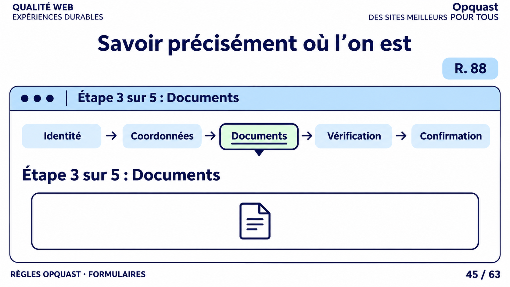
Une personne en sweat gris, avec un sac à dos et une tablette en main, pointe une zone de dépôt de fichiers. La fenêtre de droite répète Étape 3 sur 5 : Documents en haut et dans le contenu. Dans le chemin de cinq étapes, Identité et Coordonnées portent des coches vertes, Documents est entouré de bleu et souligné par un triangle. Vérification et Confirmation restent des cercles gris.
Textes affichés dans l’image
- QUALITÉ WEB
- EXPÉRIENCES DURABLES
- Opquast
- DES SITES MEILLEURS POUR TOUS
- Savoir précisément où l’on est
- R. 88
- Étape 3 sur 5 : Documents
- Identité
- Coordonnées
- Documents
- Vérification
- Confirmation
- Étape 3 sur 5 : Documents
- RÈGLES OPQUAST · FORMULAIRES
- 45 / 63
Règles Opquast de la slide
Cinq étapes, aucune active
- Camille voit les cinq étapes de sa démarche.
- Aucune n’est pourtant signalée comme celle en cours.
Impact pour l’utilisateur
- Elle voit la liste, mais elle ne sait pas à quelle étape elle se trouve.
Ce que garantit la règle
- La règle de l’étape en cours vise à ce que l’étape en cours d’un processus complexe soit indiquée.
- Le contrôle officiel vérifie, sur chaque page, que l’étape en cours figure dans le titre de la page et qu’elle est mise en évidence dans le chemin d’étapes.
- Selon l’avis de l’expert, cette mise en évidence reste perceptible sans les styles CSS ni la perception des couleurs.
- Un intitulé précis comme « Étape 3 sur 5 : Documents » aide aussi les technologies d’assistance à comprendre la progression.
- Cette règle est distincte de celle de la liste des étapes, et chacune peut échouer indépendamment de l’autre.
Mémo oral
- Étape en cours : où suis-je ?
Transition
- Savoir où l’on est appelle une autre capacité : pouvoir revenir à l’étape précédente.
Slide 46 - Revenir à l’étape précédente sans bricolage
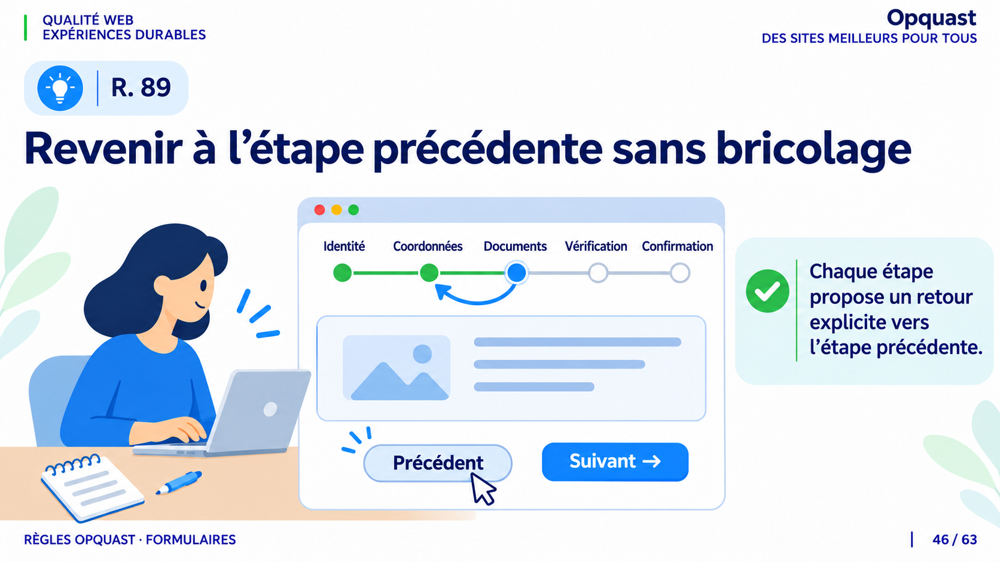
Une femme utilise un portable près d’un carnet. Une grande fenêtre conserve le chemin à cinq étapes, avec Documents en bleu. Une flèche courbe bleue remonte de Documents vers Coordonnées. Sous une vignette de contenu, le pointeur vise le bouton Précédent, à côté du bouton Suivant →. Un encadré à coche verte, à droite, énonce le principe du retour explicite.
Textes affichés dans l’image
- QUALITÉ WEB
- EXPÉRIENCES DURABLES
- Opquast
- DES SITES MEILLEURS POUR TOUS
- Revenir à l’étape précédente sans bricolage
- R. 89
- Chaque étape propose un retour explicite vers l’étape précédente.
- Identité
- Coordonnées
- Documents
- Vérification
- Confirmation
- Précédent
- Suivant →
- RÈGLES OPQUAST · FORMULAIRES
- 46 / 63
Règles Opquast de la slide
Corriger une étape déjà passée
- Camille est à l’étape Documents et veut corriger l’adresse saisie à l’étape Coordonnées.
Impact pour l’utilisateur
- Sans moyen de retour, elle doit recommencer la démarche ou tenter le bouton Retour du navigateur.
Ce que garantit la règle
- La règle du retour à l’étape précédente vise à ce que chaque étape permette de revenir à l’étape précédente.
- C’est une capacité de navigation interne au processus, que le bouton Retour du navigateur ne remplace pas automatiquement.
- On la contrôle en activant le retour sur chaque étape après la première et en vérifiant que l’étape précédente est atteinte.
- Cette règle ne dit pas, à elle seule, si les données seront conservées : cette exigence relève d’une règle distincte.
Mémo oral
- Étape précédente : revenir.
Transition
- Si l’on revient plutôt avec le bouton Retour du navigateur, le risque change : des réponses peuvent disparaître sans prévenir.
Slide 47 - Le bouton Retour du navigateur peut coûter cher
Une femme inquiète lève la main devant son portable. Un grand écran de navigateur montre des champs remplis, les flèches de navigation et une barre d’adresse. Une bulle bordée de rouge pointe la flèche Retour. Elle contient un triangle d’alerte et le texte demandant d’avertir avant une éventuelle perte des données.
Textes affichés dans l’image
- QUALITÉ WEB
- EXPÉRIENCES DURABLES
- Opquast
- DES SITES MEILLEURS POUR TOUS
- Le bouton Retour du navigateur peut coûter cher
- R. 90
- Si « Retour » du navigateur risque d’effacer les données, avertir avant la perte.
- RÈGLES OPQUAST · FORMULAIRES
- 47 / 63
Règles Opquast de la slide
Un retour par l’historique du navigateur
- La personne a déjà rempli plusieurs étapes de sa démarche.
- Elle clique sur le bouton Retour du navigateur, et non sur le bouton Précédent prévu par le formulaire.
- Si ce geste efface ses saisies, elle doit en être avertie avant la perte.
Impact pour l’utilisateur
- Elle perd des réponses sans avoir su que ce geste allait les effacer.
- Elle doit ressaisir ce qu’elle avait déjà fourni, ou renoncer à sa démarche.
Ce que garantit la règle
- La règle de l’avertissement lié à l’historique vise à ce que le risque de perte par l’historique du navigateur soit signalé.
- Elle est conditionnelle : elle concerne un processus complexe dans lequel l’usage de l’historique fait perdre des informations.
- Selon l’avis de l’expert du livre, elle s’applique tout particulièrement en l’absence de mécanisme explicite pour revenir à une étape précédente.
- Pour la contrôler, on amorce la saisie après la première étape, on utilise l’historique arrière et on observe si des données sont perdues sans avertissement.
- Elle ne se confond pas avec la règle du bouton Précédent, qui porte sur le mécanisme de retour propre à la démarche.
Mémo oral
- Avertissement : attention à l’historique.
Transition
- Être averti ne suffit pas toujours : en revenant par les étapes prévues, les réponses doivent tout simplement rester là.
Slide 48 - Revenir ne doit pas effacer les réponses précédentes
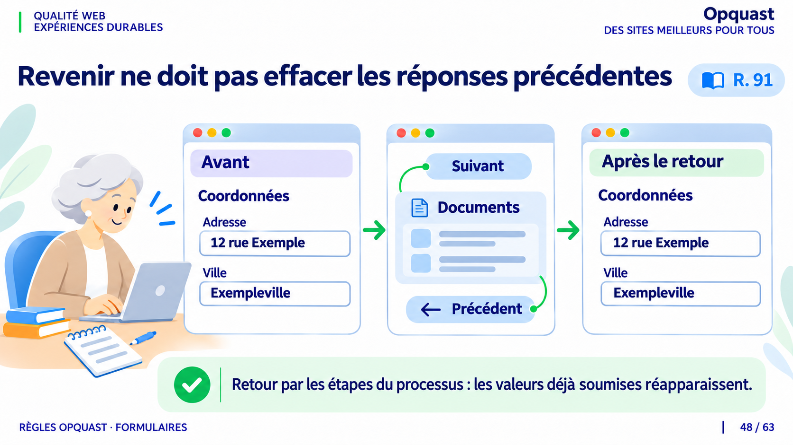
Une femme aux cheveux blancs utilise un portable, près de livres et d’un carnet. Trois fenêtres reliées par des flèches vertes présentent les coordonnées avant le départ, les documents avec Suivant et Précédent, puis les coordonnées après le retour. La même adresse fictive et la même ville sont visibles dans les deux fenêtres de coordonnées. Le bandeau vert inférieur énonce le principe.
Textes affichés dans l’image
- QUALITÉ WEB
- EXPÉRIENCES DURABLES
- Opquast
- DES SITES MEILLEURS POUR TOUS
- Revenir ne doit pas effacer les réponses précédentes
- R. 91
- Retour par les étapes du processus : les valeurs déjà soumises réapparaissent.
- Avant
- Coordonnées
- Adresse
- 12 rue Exemple
- Ville
- Exempleville
- Suivant
- Documents
- Précédent
- Après le retour
- Coordonnées
- Adresse
- 12 rue Exemple
- Ville
- Exempleville
- RÈGLES OPQUAST · FORMULAIRES
- 48 / 63
Règles Opquast de la slide
Revenir par le bouton prévu
- Camille revient de l’étape Documents à l’étape Coordonnées en utilisant le bouton Précédent de la démarche.
- Son adresse et sa ville doivent être là, telles qu’elle les avait soumises.
Impact pour l’utilisateur
- Si les champs réapparaissent vides, une navigation normale dans la démarche lui fait perdre les réponses déjà fournies.
- Elle doit ressaisir un travail qu’elle avait déjà accompli.
Ce que garantit la règle
- La règle de la conservation entre étapes vise à ce que les données des étapes précédemment soumises soient conservées et réaffichées.
- On la contrôle en utilisant Précédent puis Suivant dans la démarche, et en comparant les réponses conservées.
- Elle porte sur la conservation effective dans le parcours, pas seulement sur un avertissement lié au Retour du navigateur.
- Avec la règle du retour, on sait revenir ; avec celle de la conservation, on ne perd pas son travail ; avec celle de l’avertissement, on teste un autre scénario, celui de l’historique du navigateur.
Mémo oral
- Retour sans perte : conserver le travail.
Transition
- Ces trois scénarios de retour prennent place dans une suite de cinq capacités à retenir ensemble.
Slide 49 - Les cinq leviers d’une démarche longue : 87-91
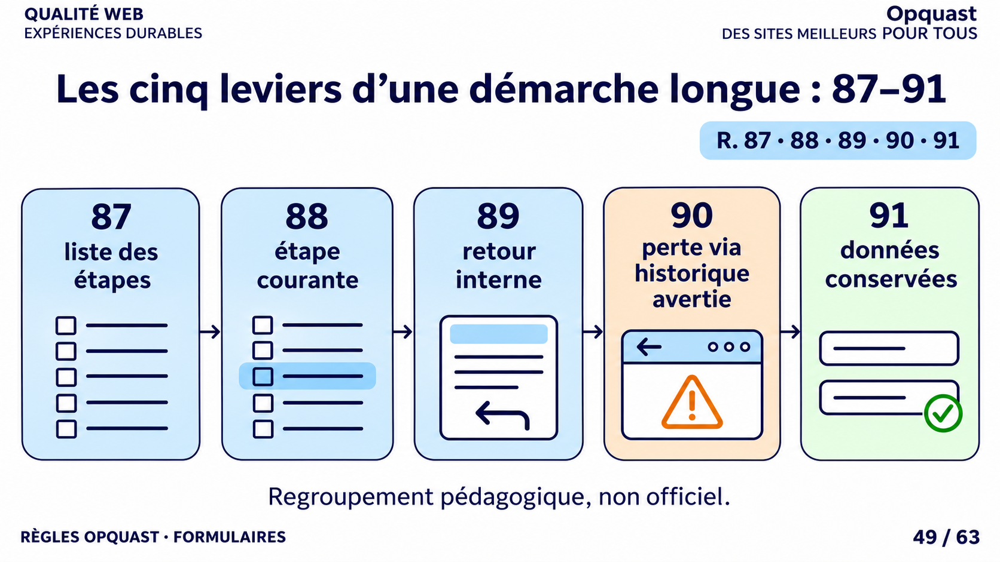
Un homme barbu tient deux dossiers bleus à côté d’une table avec portable, carnet, tasse, livres et plante. Cinq panneaux numérotés de 87 à 91 montrent une liste d’étapes, un jalon actif, une flèche de retour interne, une alerte sous les commandes du navigateur et deux valeurs accompagnées de coches. Une ligne colorée les relie. Le statut du regroupement figure dans le bandeau inférieur.
Textes affichés dans l’image
- QUALITÉ WEB
- EXPÉRIENCES DURABLES
- Opquast
- DES SITES MEILLEURS POUR TOUS
- Les cinq leviers d’une démarche longue : 87–91
- R. 87 · 88 · 89 · 90 · 91
- 87
- liste des étapes
- 88
- étape courante
- 89
- retour interne
- 90
- perte via historique avertie
- 91
- données conservées
- Regroupement pédagogique, non officiel.
- RÈGLES OPQUAST · FORMULAIRES
- 49 / 63
Règles Opquast de la slide
Une petite histoire en cinq phrases
- Pour une démarche longue, cinq capacités se suivent comme une histoire.
- Je vois la liste des étapes, et je sais à laquelle je me trouve.
- Je peux revenir à l’étape précédente par un mécanisme prévu.
- Si l’historique du navigateur peut faire perdre des données, j’en suis averti.
- Si je navigue normalement dans les étapes, mes réponses restent présentes.
Cinq capacités, cinq contrôles
- Chaque phrase désigne une règle distincte et correspond à un contrôle concret différent.
- Le retour interne, l’avertissement et la conservation paraissent proches, mais ils impliquent trois manipulations de test différentes.
- Une navigation possible ne suffit pas lorsque la position reste obscure ou que les données sont perdues.
Un regroupement pour mémoriser
- Ce regroupement est pédagogique et non officiel : il aide à retrouver chaque règle par son objet.
- Liste, position, retour, avertissement, conservation.
Transition
- Reste à reconnaître ces capacités, et surtout leurs absences, dans un parcours complet.
Slide 50 - Cas intégrateur : quatre écrans, sept risques
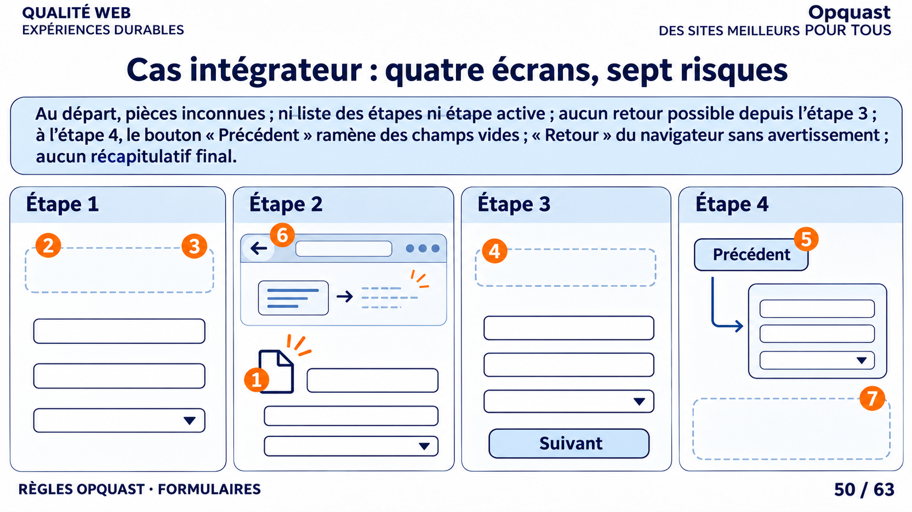
Un homme barbu écrit dans un carnet, une main au menton, devant son portable. Une bulle à gauche expose le cas. À droite, quatre fenêtres en grille portent les titres Étape 1 à Étape 4. Sept repères verts numérotés pointent différentes zones : haut du premier écran, document et retour navigateur du deuxième, bas du troisième, champs et envoi du quatrième. Les boutons Suivant et Précédent sont visibles.
Textes affichés dans l’image
- QUALITÉ WEB
- EXPÉRIENCES DURABLES
- Opquast
- DES SITES MEILLEURS POUR TOUS
- Cas intégrateur : quatre écrans, sept risques
- Au départ, pièces inconnues ; ni liste des étapes ni étape active ; aucun retour possible depuis l’étape 3 ; à l’étape 4, le bouton « Précédent » ramène des champs vides ; « Retour » du navigateur sans avertissement ; aucun récapitulatif final.
- Étape 1
- 2
- 3
- Étape 2
- 6
- 1
- Étape 3
- 4
- Suivant
- Étape 4
- Précédent
- 5
- 7
- RÈGLES OPQUAST · FORMULAIRES
- 50 / 63
Règles Opquast de la slide
Une démarche en quatre écrans
- Une démarche de dossier se déroule sur quatre écrans.
- Les documents nécessaires ne sont révélés qu’en cours de route, et ni la liste des étapes ni l’étape active ne sont affichées.
- À l’étape 3, aucun bouton ne permet de revenir ; à l’étape 4, le bouton Précédent ramène des champs vides.
- Le Retour du navigateur efface la saisie sans avertissement, et aucun récapitulatif n’apparaît avant la confirmation.
Les réponses attendues
- Les pièces annoncées trop tard relèvent de la règle de l’annonce, dès le début du processus, des données et documents exigés, vérifiée sur la page d’entrée.
- L’absence de liste des étapes relève de la règle de la liste des étapes, et l’absence d’étape active de celle de l’étape en cours, vérifiées page par page.
- L’impossibilité de revenir depuis l’étape 3 relève de la règle du retour à l’étape précédente, vérifiée en cherchant le bouton prévu sur chaque étape.
- Les champs vides après Précédent relèvent de la règle de la conservation des données soumises, vérifiée par un aller-retour dans la démarche.
- Le Retour du navigateur sans avertissement relève de la règle de l’avertissement lié à l’historique, à tester avant de conclure.
- L’absence de récapitulatif relève de la règle du récapitulatif global avant l’envoi définitif, vérifiée en jouant le parcours jusqu’à la validation.
Tester avant de conclure
- Un défaut de retour par le navigateur n’établit pas automatiquement un défaut de conservation des données, car les deux scénarios se testent séparément.
- Le parcours révèle des défauts invisibles au scan d’une page.
Transition
- Un formulaire engage aussi des règles qui se trouvent hors de sa propre rubrique.
Slide 51 - Un formulaire mobilise d’autres rubriques Opquast
Un homme barbu tient deux fiches à pictogrammes près de son portable. Une fenêtre centrale intitulée formulaire contient des champs, une case et un bouton. Huit traits colorés la relient à des encadrés : données personnelles, sécurité, navigation et structure à gauche ; contact, présentation, newsletter et contenus à droite. Chaque encadré porte un pictogramme et des références de règles. L’acte 6 est annoncé au-dessus du titre.
Textes affichés dans l’image
- QUALITÉ WEB
- EXPÉRIENCES DURABLES
- Opquast
- DES SITES MEILLEURS POUR TOUS
- Un formulaire mobilise d’autres rubriques Opquast
- Acte 6 · S’entraîner pour la certification
- Données personnelles
- 24/26
- Sécurité
- 201–205
- Navigation
- 165–167/172
- formulaire
- Structure
- 236
- Contact
- 103/108/110
- Présentation
- 181
- Newsletter
- 173–176
- Contenus
- 10
- RÈGLES OPQUAST · FORMULAIRES
- 51 / 63
Un formulaire reste une page du service
- Sixième et dernier acte : s’entraîner pour la certification.
- Les règles de la rubrique Formulaires ne couvrent pas à elles seules tous les risques d’un formulaire.
- Les alias mail contenant le signe plus, l’absence d’information sur l’existence d’un compte et le titre de page ont chacun leur règle.
- La navigation au clavier en mobilise plusieurs : un focus ni supprimé ni masqué, l’accès à tous les contenus et services, un ordre prévisible.
- L’annonce des limites de temps, l’inscription et la désinscription aux newsletters, la sécurité des mots de passe et les identifiants HTML uniques complètent le tableau.
Les réponses attendues
- Une erreur signalée uniquement en rouge relève de la règle selon laquelle l’information n’est pas véhiculée uniquement par la couleur, dans la rubrique Présentation.
- Un contenu destiné à un espace public relève de la règle qui permet de le vérifier avant son envoi définitif, dans la rubrique Contenus.
- L’absence d’accusé de réception d’une demande d’information relève d’une règle de la rubrique Identification et contact.
Penser transversal
- En examen, une question sur un formulaire peut relever d’une autre rubrique Opquast.
- Il n’existe pas pour autant de correspondance automatique, car la réponse part du risque réellement rencontré.
- Un formulaire n’est pas qu’une rubrique.
Transition
- Une autre confusion guette : croire qu’une règle Opquast et un critère RGAA disent la même chose.
Slide 52 - Opquast ≠ RGAA : deux angles complémentaires
Un homme barbu tient une feuille, une main au menton, à une table avec carnet, tasse et plante. Un petit écran avec un champ est relié par deux traits à deux dossiers ouverts. Le dossier bleu Opquast porte un pictogramme d’écran et évoque qualité et risques utilisateur ; le vert RGAA porte le symbole du fauteuil roulant et évoque critères et tests d’accessibilité. Le bandeau inférieur énonce leur distinction.
Textes affichés dans l’image
- QUALITÉ WEB
- EXPÉRIENCES DURABLES
- Opquast
- DES SITES MEILLEURS POUR TOUS
- Opquast ≠ RGAA : deux angles complémentaires
- Opquast : qualité et risques utilisateur.
- RGAA : critères et tests d’accessibilité.
- Même composant, questions distinctes.
- RÈGLES OPQUAST · FORMULAIRES
- 52 / 63
Deux référentiels, deux autorités
- Opquast aborde la qualité d’un service numérique et les risques que ses défauts font courir à l’utilisateur.
- Le RGAA est le référentiel français d’accessibilité, avec ses propres critères et ses propres tests.
- Les sujets se recoupent parfois, mais il n’existe pas de correspondance un pour un entre les deux.
Le même champ, deux questions
- L’étiquette d’un champ est traitée dans les deux référentiels.
- Leurs formulations et leurs méthodes de test ne sont pourtant pas identiques.
- Une règle Opquast respectée ne prouve donc pas la conformité RGAA, et l’inverse est vrai aussi.
Répondre depuis le bon référentiel
- En certification Opquast, la réponse part de la formulation de la règle Opquast.
- Dans un audit RGAA, elle part des critères et des tests RGAA.
- Les preuves et les décisions restent rattachées au référentiel réellement contrôlé.
- Même champ, référentiels distincts.
Transition
- Reste à choisir, pour chaque défaut, la bonne manière de le vérifier.
Slide 53 - La bonne méthode de contrôle : regarder, essayer, inspecter
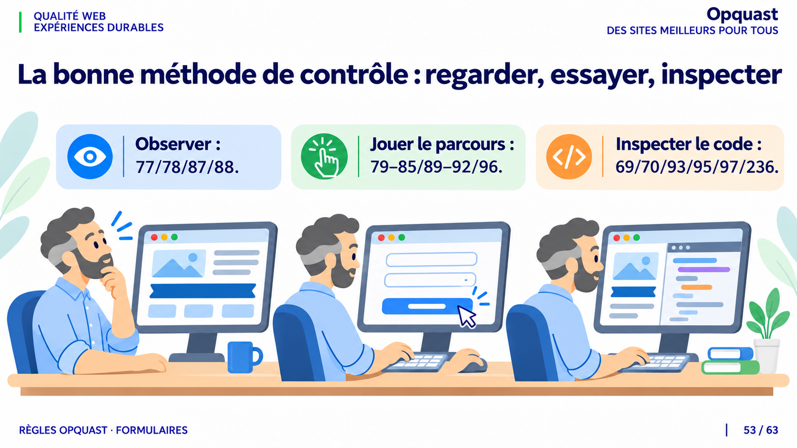
Un même homme barbu apparaît trois fois à une longue table. À gauche, il observe une page, une main au menton. Au centre, il utilise clavier et souris devant un formulaire dont le bouton est visé par un pointeur. À droite, il travaille devant une page partagée avec un panneau de code coloré. Les trois bandeaux supérieurs associent un œil, une main et des chevrons de code aux méthodes et aux règles.
Textes affichés dans l’image
- QUALITÉ WEB
- EXPÉRIENCES DURABLES
- Opquast
- DES SITES MEILLEURS POUR TOUS
- La bonne méthode de contrôle : regarder, essayer, inspecter
- Observer :
- 77/78/87/88.
- Jouer le parcours :
- 79–85/89–92/96.
- Inspecter le code :
- 69/70/93/95/97/236.
- RÈGLES OPQUAST · FORMULAIRES
- 53 / 63
Trois gestes de contrôle
- Observer l’écran sert pour le placement des étiquettes et des aides, la liste des étapes et l’étape en cours.
- Jouer le parcours sert pour les erreurs, la soumission, le retour, la conservation des données, le copier-coller et la relance de la double authentification.
- Inspecter le code sert pour les étiquettes, les descriptions, les regroupements de listes, les types de champs, l’autocomplétion et l’unicité des identifiants.
Les réponses attendues
- Pour prouver qu’une étiquette est associée à son champ, on inspecte le code.
- Pour prouver que les champs rejetés sont signalés, on provoque un rejet.
- Pour prouver que les données sont conservées, on revient dans le parcours et on compare les valeurs.
Les limites d’une seule méthode
- Une vérification seulement visuelle manque les associations techniques et les comportements après envoi.
- Certaines règles nécessitent plusieurs gestes, et une seule méthode ne permet pas d’évaluer toute la rubrique.
- Un passage automatique sans scénario ne peut pas démontrer la conservation des données après une erreur.
- Les conclusions tirées de tests avec des technologies d’assistance demandent de la prudence.
Mémo oral
- Voir, tester, inspecter.
Transition
- Ces gestes servent surtout à départager des règles voisines, souvent confondues.
Slide 54 - Les dix confusions qui coûtent des points
Une femme en veste violette compare deux fiches qu’elle tient devant une bibliothèque : l’une montre un formulaire, l’autre une liste à cases. Un grand carnet ouvert sur la table présente cinq groupes de règles sur chaque page, accompagnés de pictogrammes. Deux livres et un stylo sont posés à gauche. Un encadré à droite précise le statut pédagogique du regroupement.
Textes affichés dans l’image
- QUALITÉ WEB
- EXPÉRIENCES DURABLES
- Opquast
- DES SITES MEILLEURS POUR TOUS
- Les dix confusions qui coûtent des points
- 69/77
- 70/78
- 71/72/73/74
- 75/76/92
- 79/80/81/82
- 83/84/85
- 87/88
- 89/90/91
- 93/94
- 95/97
- Regroupement pédagogique, non officiel.
- RÈGLES OPQUAST · FORMULAIRES
- 54 / 63
Les frontières entre règles voisines
- Le plus utile pour la certification se trouve dans les frontières entre règles proches.
- Il faut distinguer le code de l’écran, pour l’étiquette comme pour l’aide.
- Avant la saisie, l’obligation, le format, la casse et la longueur relèvent de quatre règles différentes.
- Pour le mot de passe, la prévention des erreurs de création ne se confond ni avec l’affichage en clair, ni avec le copier-coller.
Après une erreur, après l’envoi, dans un processus
- Après un rejet, le champ concerné, la raison, la modification des saisies et la langue du message sont quatre exigences séparées.
- Le récapitulatif avant l’envoi se distingue de la page qui permet de reprendre la navigation et du message de réussite ou d’échec.
- La liste des étapes se distingue de la position, et le retour se distingue de l’avertissement et de la conservation.
- Le regroupement d’une liste se distingue de son ordre, et le type d’un champ du signalement de l’autocomplétion.
Ce que ce regroupement ne remplace pas
- Ce regroupement est pédagogique et non officiel.
- Une connaissance vague de chaque règle ne suffit pas quand plusieurs réponses semblent plausibles.
- Il faut se méfier des fausses règles en « toujours » ou « jamais » lorsque l’intitulé officiel comporte une condition.
- Les frontières sont plus importantes que les numéros seuls.
Transition
- Place à l’évaluation finale, pour éprouver ces frontières sur des situations précises.
Slide 55 - Évaluation finale 1/4 : questions 1 à 4
Une femme en veste violette écrit dans un carnet tenu en main, près d’un portable, d’une tasse, de livres et d’une plante. Quatre panneaux en grille portent les questions 1 à 4. Les fenêtres montrent un libellé éloigné relié par une flèche discontinue au champ, une aide sous un champ, un champ vide, puis deux champs contenant ABC et abc. Chaque énoncé précède son exemple.
Textes affichés dans l’image
- QUALITÉ WEB
- EXPÉRIENCES DURABLES
- Opquast
- DES SITES MEILLEURS POUR TOUS
- Évaluation finale 1/4 : questions 1 à 4
- 1. Libellé relié dans le code, mais affiché loin du champ.
- 2. Consigne juste sous le champ, sans lien dans le code.
- 3. Champ obligatoire : rien ne l’annonce.
- 4. Refus selon la casse, sans avertissement
- ABC
- abc
- RÈGLES OPQUAST · FORMULAIRES
- 55 / 63
Règles Opquast de la slide
Une seule règle par situation
- Pour chaque situation, une seule règle est attendue, justifiée en une phrase.
- Si plusieurs défauts sont imaginables, la bonne réponse est celle qui correspond au défaut précisément décrit.
- Ces questions sont des créations pédagogiques, jamais des questions officielles de l’examen.
Les réponses attendues
- Question 1 : la règle du rattachement visuel de l’étiquette au champ, car l’association dans le code existe déjà ; on le vérifie au rendu, à plusieurs tailles d’écran.
- Question 2 : la règle des informations complémentaires associées au champ dans le code, car la consigne est déjà bien placée à l’écran ; on le vérifie en cherchant un attribut aria-describedby ou un regroupement par fieldset et legend.
- Question 3 : la règle de l’indication du caractère obligatoire dans l’étiquette ; on le vérifie en lisant les étiquettes, puis en tentant la validation d’un champ non marqué.
- Question 4 : la règle de l’avertissement sur la sensibilité à la casse, et non celle du format ; on le vérifie en testant des variantes de casse.
Mémo oral
- Justifier l’énoncé précis plutôt que deviner.
Transition
- Les quatre questions suivantes portent sur les limites de saisie, les types de champs, l’autocomplétion et le format.
Slide 56 - Évaluation finale 2/4 : questions 5 à 8
Une femme en veste violette écrit dans un carnet, près de son portable. Quatre colonnes portent les questions 5 à 8 et leurs fenêtres d’exemple : texte coupé à droite, champ au-dessus d’un pavé de touches, champ relié à un panneau de code, puis champ suivi d’une alerte rouge donnant le format de date attendu. Une tasse, deux livres et une plante sont posés sur la table.
Textes affichés dans l’image
- QUALITÉ WEB
- EXPÉRIENCES DURABLES
- Opquast
- DES SITES MEILLEURS POUR TOUS
- Évaluation finale 2/4 : questions 5 à 8
- 5. Commentaire tronqué à 250 caractères, limite jamais annoncée.
- 6. Téléphone en type=number.
- 7. Champ e-mail sans attribut autocomplete.
- 8. Date refusée avec « format JJ/MM/AAAA attendu », jamais indiqué avant.
- format JJ/MM/AAAA attendu
- RÈGLES OPQUAST · FORMULAIRES
- 56 / 63
Règles Opquast de la slide
Une seule règle par situation
- Pour chaque situation, une seule règle est attendue, justifiée en une phrase.
- Si plusieurs défauts sont imaginables, la bonne réponse est celle qui correspond au défaut précisément décrit.
- Ces questions sont des créations pédagogiques, jamais des questions officielles de l’examen.
Les réponses attendues
- Question 5 : la règle de l’indication des limites de nombre de caractères ; on le vérifie en testant la longueur acceptée et sa cohérence avec l’indication.
- Question 6 : la règle du type approprié des champs, car le type attendu pour un téléphone est la valeur tel, et non number ; on le vérifie en inspectant l’attribut type.
- Question 7 : la règle du signalement de l’autocomplétion dans le code ; on le vérifie en cherchant l’attribut autocomplete et sa valeur.
- Question 8 : la règle de l’indication du format de saisie, car le message donne déjà la raison du rejet ; on le vérifie en cherchant l’annonce du format avant toute saisie.
Mémo oral
- Justifier l’énoncé précis plutôt que deviner.
Transition
- Les quatre questions suivantes portent sur ce qui se passe après une erreur et après l’envoi.
Slide 57 - Évaluation finale 3/4 : questions 9 à 12
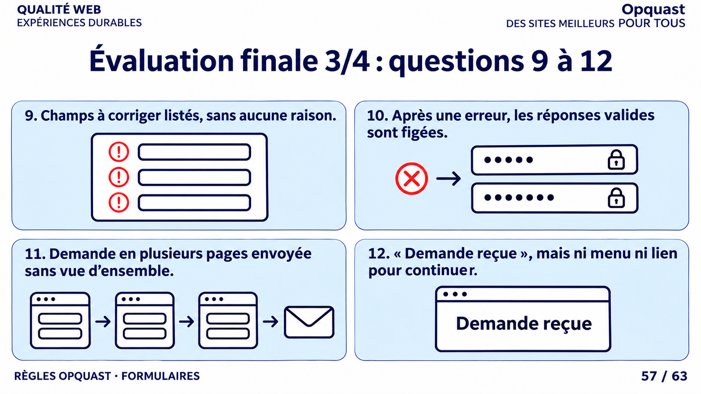
Une femme en veste violette écrit dans un carnet près d’un portable. Quatre panneaux en grille portent les questions 9 à 12. Ils montrent deux champs rouges avec exclamations, deux champs à cadenas, plusieurs pages superposées avec un chemin d’étapes, puis une page à coche verte portant Demande reçue. Les énoncés sont placés à gauche des fenêtres ; tasse, livres et plante bordent la table.
Textes affichés dans l’image
- QUALITÉ WEB
- EXPÉRIENCES DURABLES
- Opquast
- DES SITES MEILLEURS POUR TOUS
- Évaluation finale 3/4 : questions 9 à 12
- 9. Champs à corriger listés, sans aucune raison.
- 10. Après une erreur, les réponses valides sont figées.
- 11. Demande en plusieurs pages envoyée sans vue d’ensemble.
- 12. « Demande reçue », mais ni menu ni lien pour continuer.
- Demande reçue
- RÈGLES OPQUAST · FORMULAIRES
- 57 / 63
Règles Opquast de la slide
Une seule règle par situation
- Pour chaque situation, une seule règle est attendue, justifiée en une phrase.
- Si plusieurs défauts sont imaginables, la bonne réponse est celle qui correspond au défaut précisément décrit.
- Ces questions sont des créations pédagogiques, jamais des questions officielles de l’examen.
Les réponses attendues
- Question 9 : la règle des raisons du rejet, car les champs concernés sont déjà indiqués ; on le vérifie en provoquant différentes erreurs et en lisant la précision des raisons.
- Question 10 : la règle de la modification de toutes les données saisies après un rejet ; on le vérifie en remplissant plusieurs champs, en provoquant une erreur, puis en essayant de les modifier.
- Question 11 : la règle du récapitulatif global avant l’envoi définitif ; on le vérifie en jouant le parcours multipage jusqu’à la validation.
- Question 12 : la règle de la page qui permet de reprendre la navigation après l’envoi, car le résultat est déjà annoncé ; on le vérifie en soumettant le formulaire et en cherchant liens et menu.
Mémo oral
- Justifier l’énoncé précis plutôt que deviner.
Transition
- Les quatre dernières questions portent sur la démarche longue et sur les listes d’options.
Slide 58 - Évaluation finale 4/4 : questions 13 à 16
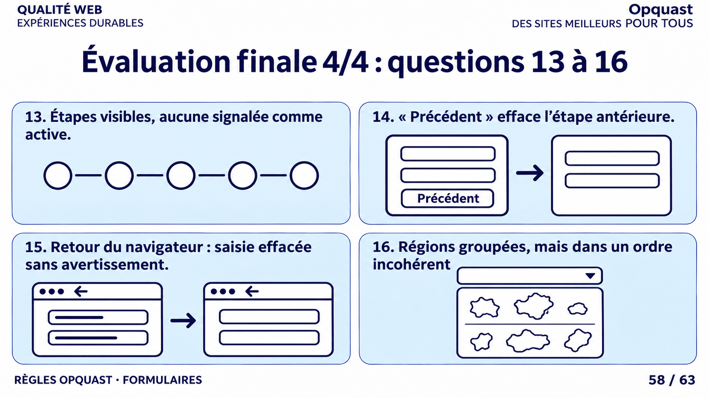
Une femme en veste violette écrit dans un carnet, près de son portable. Les questions 13 à 16 sont disposées en grille. Leurs exemples montrent quatre jalons identiques, deux fenêtres reliées depuis le bouton Précédent, une commande Retour reliée à des champs vides et une liste en trois groupes. Une tasse, des livres et une plante sont posés sur la table.
Textes affichés dans l’image
- QUALITÉ WEB
- EXPÉRIENCES DURABLES
- Opquast
- DES SITES MEILLEURS POUR TOUS
- Évaluation finale 4/4 : questions 13 à 16
- 13. Étapes visibles, aucune signalée comme active.
- 14. « Précédent » efface l’étape antérieure.
- Précédent
- 15. Retour du navigateur : saisie effacée sans avertissement.
- 16. Régions groupées, mais dans un ordre incohérent
- RÈGLES OPQUAST · FORMULAIRES
- 58 / 63
Règles Opquast de la slide
Une seule règle par situation
- Pour chaque situation, une seule règle est attendue, justifiée en une phrase.
- Si plusieurs défauts sont imaginables, la bonne réponse est celle qui correspond au défaut précisément décrit.
- Ces questions sont des créations pédagogiques, jamais des questions officielles de l’examen.
Les réponses attendues
- Question 13 : la règle de l’indication de l’étape en cours ; on le vérifie en examinant sur chaque page l’indication d’étape active.
- Question 14 : la règle de la conservation des données soumises, car le bouton de retour existe déjà ; on le vérifie en utilisant Précédent puis Suivant et en comparant les réponses.
- Question 15 : la règle de l’avertissement lié à l’historique ; on le vérifie en amorçant la saisie, en utilisant l’historique arrière et en observant les données.
- Question 16 : la règle de l’ordre identifiable des listes d’options, car les groupes existent déjà ; on le vérifie en ouvrant la liste et en cherchant un ordre reconnaissable.
Mémo oral
- Justifier l’énoncé précis plutôt que deviner.
Transition
- Il reste à tout mobiliser dans un grand cas final : un formulaire complet à auditer en cinq minutes.
Slide 59 - Grand cas final : un formulaire à auditer en cinq minutes
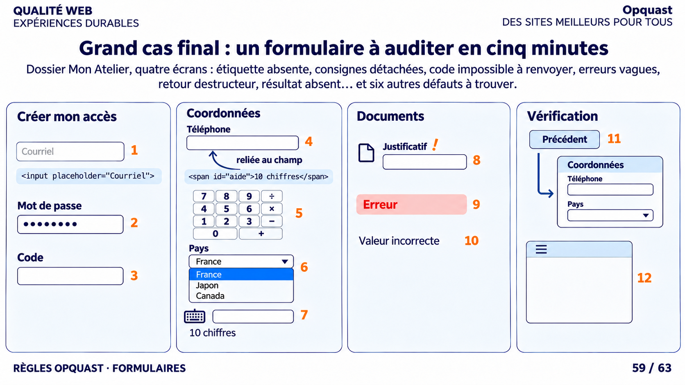
Un homme barbu utilise un portable à gauche. Quatre écrans occupent le reste de la slide : Créer mon accès et Documents sont empilés à gauche, Coordonnées au centre et Vérification à droite. Douze repères ronds bleus pointent les champs, le code, le pavé numérique, la liste de pays, le clavier, les erreurs et le retour. Le champ Téléphone est relié par un long trait gris à une aide en bas. L’énoncé figure sous le titre.
Textes affichés dans l’image
- QUALITÉ WEB
- EXPÉRIENCES DURABLES
- Opquast
- DES SITES MEILLEURS POUR TOUS
- Grand cas final : un formulaire à auditer en cinq minutes
- Dossier Mon Atelier, quatre écrans : étiquette absente, consignes détachées, code impossible à renvoyer, erreurs vagues, retour destructeur, résultat absent… et six autres défauts à trouver.
- Créer mon accès
- Courriel
- 1
- <input placeholder="Courriel">
- Mot de passe
- 2
- Code
- 3
- Coordonnées
- Téléphone
- 4
- reliée au champ
- <span id="aide">10 chiffres</span>
- 7
- 8
- 9
- ÷
- 4
- 5
- 6
- ×
- 1
- 2
- 3
- −
- 0
- +
- 5
- Pays
- France
- France
- Japon
- Canada
- 6
- 7
- 10 chiffres
- Documents
- Justificatif
- 8
- Erreur
- 9
- Valeur incorrecte
- 10
- Vérification
- Précédent
- 11
- Coordonnées
- Téléphone
- Pays
- 12
- RÈGLES OPQUAST · FORMULAIRES
- 59 / 63
Un dossier, plusieurs natures de défauts
- Le dossier fictif Mon Atelier enchaîne quatre écrans : créer son accès, donner ses coordonnées, déposer ses documents, vérifier sa demande.
- Certains défauts se voient à l’écran, d’autres demandent d’ouvrir le code ou d’essayer réellement le parcours.
- Un même dossier peut ainsi échouer sur l’étiquette d’un champ, sur une erreur mal expliquée ou sur un résultat jamais annoncé.
Ce que l’audit doit établir
- Il s’agit de retenir au moins dix défauts parmi les douze repères.
- Pour chacun, il faut nommer la règle concernée, le préjudice pour l’utilisateur et le geste qui permet de le vérifier.
- Un des défauts relève d’une autre rubrique Opquast que les formulaires : la recherche ne s’arrête pas aux trente règles étudiées.
- Le but n’est pas de deviner une note, mais de décrire une investigation défendable.
Mémo oral
- Un défaut, un risque, une règle, un contrôle.
Transition
- Reprenons maintenant le parcours écran par écran pour confronter chaque repère à sa règle.
Slide 60 - Débrief du grand cas : réparer le parcours, pas la façade
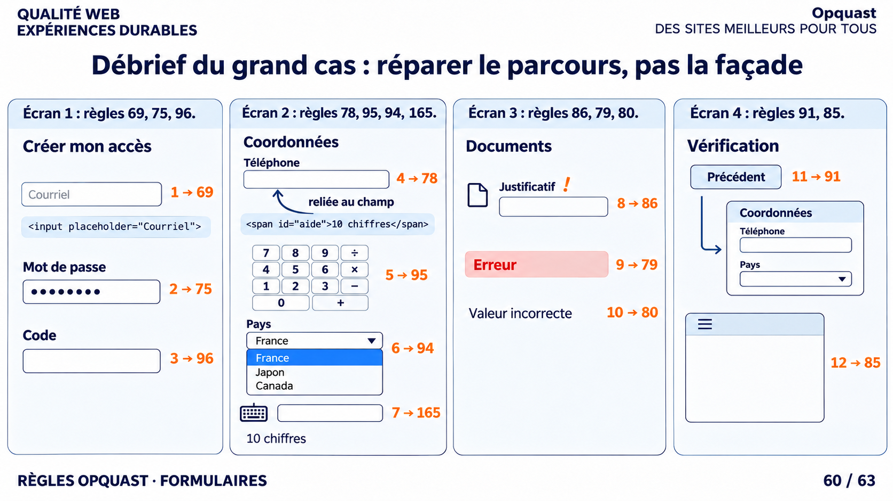
Un homme barbu utilise un portable. Les quatre écrans du grand cas sont repris : création d’accès et documents à gauche, coordonnées au centre, vérification à droite. Des cartouches verts relient chacun des douze repères à un numéro de règle par une flèche. Au-dessus de chaque écran, un bandeau récapitule ses règles. Le pavé numérique, les pays, les erreurs et le long lien gris de l’aide restent visibles.
Textes affichés dans l’image
- QUALITÉ WEB
- EXPÉRIENCES DURABLES
- Opquast
- DES SITES MEILLEURS POUR TOUS
- Débrief du grand cas : réparer le parcours, pas la façade
- Écran 1 : règles 69, 75, 96.
- Créer mon accès
- Courriel
- 1 → 69
- <input placeholder="Courriel">
- Mot de passe
- 2 → 75
- Code
- 3 → 96
- Écran 2 : règles 78, 95, 94, 165.
- Coordonnées
- Téléphone
- 4 → 78
- reliée au champ
- <span id="aide">10 chiffres</span>
- 7
- 8
- 9
- ÷
- 4
- 5
- 6
- ×
- 1
- 2
- 3
- −
- 0
- +
- 5 → 95
- Pays
- France
- France
- Japon
- Canada
- 6 → 94
- 7 → 165
- 10 chiffres
- Écran 3 : règles 86, 79, 80.
- Documents
- Justificatif
- 8 → 86
- Erreur
- 9 → 79
- Valeur incorrecte
- 10 → 80
- Écran 4 : règles 91, 85.
- Vérification
- Précédent
- 11 → 91
- Coordonnées
- Téléphone
- Pays
- 12 → 85
- RÈGLES OPQUAST · FORMULAIRES
- 60 / 63
Règles Opquast de la slide
Créer son accès et donner ses coordonnées
- Le courriel n’a qu’un placeholder, et l’inspection du code confirme l’absence de label et d’aria-label : c’est la règle de l’étiquette associée au champ.
- Le mot de passe n’est demandé qu’une fois, sans mécanisme de prévention des erreurs de saisie, et cela se vérifie en créant réellement un compte.
- Le code de double authentification ne peut pas être renvoyé, ce que révèle le déclenchement de la procédure de test.
- L’aide du téléphone est bien reliée au champ dans le code, mais elle s’affiche loin de lui : seule la règle de la proximité visuelle est en défaut, à observer à plusieurs tailles d’écran.
- Le téléphone n’a pas le type attendu, la liste des pays n’a pas d’ordre identifiable, et le focus disparaît à la tabulation, ce qui relève de la rubrique Navigation.
Déposer ses documents et vérifier sa demande
- Le justificatif n’était pas annoncé au départ, ce que montre la relecture de la page d’entrée du processus.
- Après le rejet, ni le titre de la page ni les étiquettes ne disent quels champs sont en cause.
- Le message « Valeur incorrecte » ne donne ni la raison du refus ni l’aide pour corriger.
- Revenir par le bouton Précédent du formulaire efface les réponses déjà saisies.
- La page finale n’annonce ni réussite ni échec : il faut soumettre et lire réellement le résultat.
Ce que le dessin ne prouve pas
- Un visuel suscite une vérification, mais ne prouve pas à lui seul un défaut dans le code.
- Un contrôle argumenté sépare les défauts observés des hypothèses qui restent à tester.
Mémo oral
- Corriger une preuve, pas une impression.
Transition
- De ces douze repères, rassemblons les distinctions à garder en tête dans un mémo de révision.
Slide 61 - Le mémo des dix distinctions
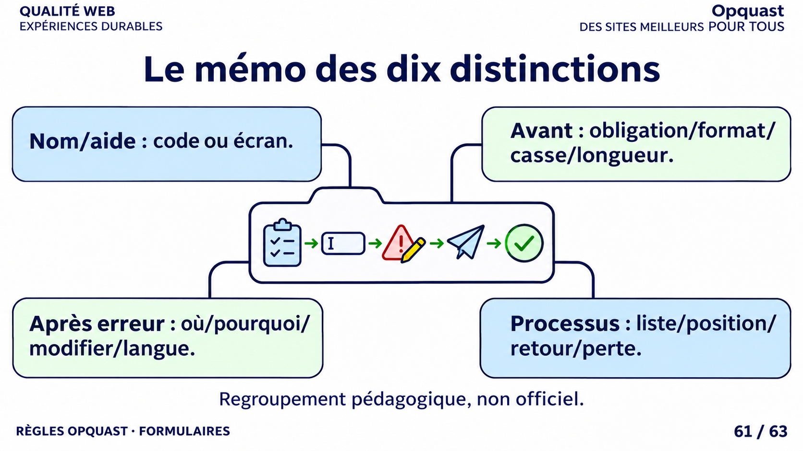
Une femme tient deux fiches illustrées devant un grand dossier bleu ouvert. Quatre intercalaires superposés portent les distinctions sur le nom et l’aide, les informations avant saisie, le traitement après erreur et le processus. Ils sont associés à un personnage, une coche, un engrenage et une flèche de retour. Un livre ouvert et un portable montrant un champ rouge encadrent le dossier. Le statut du regroupement figure en bas.
Textes affichés dans l’image
- QUALITÉ WEB
- EXPÉRIENCES DURABLES
- Opquast
- DES SITES MEILLEURS POUR TOUS
- Le mémo des dix distinctions
- Nom/aide : code ou écran.
- Avant : obligation/format/casse/longueur.
- Après erreur : où/pourquoi/modifier/langue.
- Processus : liste/position/retour/perte.
- Regroupement pédagogique, non officiel.
- RÈGLES OPQUAST · FORMULAIRES
- 61 / 63
Réviser en suivant le parcours
- Une liste sèche de trente règles s’oublie vite sous la pression de l’examen.
- Le parcours de l’utilisateur offre une trame plus solide : avant la saisie, pendant, en cas d’erreur, après l’envoi et dans un processus long.
- Pour le nom et l’aide d’un champ, la première question est de savoir si l’on vérifie le code ou l’écran.
- Avant la saisie, l’utilisateur doit connaître l’obligation, le format, la casse et la longueur attendus.
Après une erreur et dans un processus long
- Après une erreur, il doit savoir où elle se trouve, pourquoi la saisie est refusée, s’il peut la modifier, et lire le message dans la langue du formulaire.
- Dans un processus long, il doit voir la liste des étapes et sa position, pouvoir revenir en arrière et ne rien perdre de ses réponses.
Ce que le mémo ne remplace pas
- Ce regroupement aide à retrouver une règle à partir du besoin de l’utilisateur.
- Il ne constitue pas une classification officielle et ne remplace pas l’étude des contenus de chaque règle.
- Une histoire vaut mieux que trente cartes isolées.
Transition
- Il reste une dernière question, celle qui résume toutes les autres.
Slide 62 - Dernière question : l’utilisateur garde-t-il la maîtrise ?
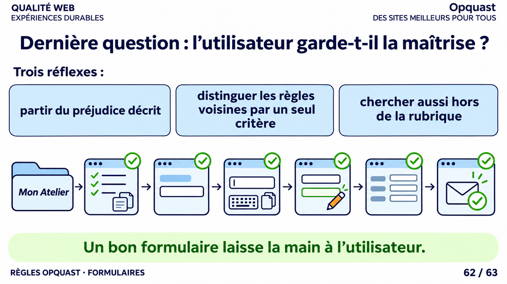
Trois personnes sont réunies autour d’une table : un homme portant un casque utilise un portable à gauche, une femme touche son téléphone au centre et une femme aux cheveux blancs écrit au crayon à droite. Au premier plan, un écran Mon Atelier présente une coche verte. Un livre ouvert, des feuilles et deux livres sont posés sur la table. Les trois réflexes figurent sous le titre et le slogan dans le bandeau vert inférieur.
Textes affichés dans l’image
- QUALITÉ WEB
- EXPÉRIENCES DURABLES
- Opquast
- DES SITES MEILLEURS POUR TOUS
- Dernière question : l’utilisateur garde-t-il la maîtrise ?
- Trois réflexes :
- partir du préjudice décrit
- distinguer les règles voisines par un seul critère
- chercher aussi hors de la rubrique
- Mon Atelier
- Un bon formulaire laisse la main à l’utilisateur.
- RÈGLES OPQUAST · FORMULAIRES
- 62 / 63
Le fil rouge arrive au bout
- Dans le dossier Mon Atelier, on a pu se préparer, comprendre chaque champ, saisir sans blocage, corriger sans perdre son travail, vérifier avant d’envoyer et obtenir une réponse claire.
- Voilà ce que ces trente règles construisent ensemble.
- Quand une seule étape échoue, le service peut exclure la personne malgré une interface soignée.
Trois réflexes pour l’examen
- Partir du préjudice décrit par l’énoncé, pas d’un mot-clé.
- Distinguer les règles voisines par un seul critère : le code ou l’écran, avant ou après l’envoi, la liste ou la position.
- Chercher aussi hors de la rubrique : couleur, clavier, contact ou sécurité.
Ce qui prépare vraiment
- Mieux vaut retenir les problèmes humains que les règles évitent, et le contrôle qui prouverait qu’on a agi correctement, que des phrases apprises par cœur.
- La réussite de la certification repose sur l’apprentissage et l’entraînement personnels, sans promesse de résultat.
- Préjudice, critère, transversalité : un bon formulaire laisse la main à l’utilisateur.
Transition
- Pour continuer à réviser, il reste à savoir vers quelles sources revenir.
Slide 63 - Pour aller plus loin
Une femme lit une fiche devant une bibliothèque, une main posée sur un grand livre ouvert. Un cartouche relié au livre donne son titre. Au-dessus du portable, deux encadrés à pictogrammes présentent la checklist et le glossaire. À droite, un dossier jaune porte Mon Atelier. Une fiche Vos questions, avec une bulle à point d’interrogation, est posée au premier plan.
Textes affichés dans l’image
- QUALITÉ WEB
- EXPÉRIENCES DURABLES
- Opquast
- DES SITES MEILLEURS POUR TOUS
- Pour aller plus loin
- Checklist Opquast V5
- Glossaire Formulaires
- Mon Atelier
- Livre « Qualité et conformité des services numériques »
- Vos questions
- RÈGLES OPQUAST · FORMULAIRES
- 63 / 63
Revenir aux sources pour réviser
- La checklist Opquast donne les intitulés exacts et la fiche de chaque règle, avec sa mise en œuvre et son contrôle.
- Le glossaire fixe le vocabulaire des formulaires.
- Le livre « Qualité et conformité des services numériques », dans sa quatrième édition, développe chaque rubrique.
Ce que le support ne remplace pas
- Les exercices de cette formation entraînent, mais ce sont des créations pédagogiques et non des questions officielles.
- Les modalités de certification se vérifient sur le site Opquast au moment de l’inscription, car un support daté ne les garantit pas.
- Réviser depuis les sources, pas depuis le support.
Conclusion
- Place maintenant à vos questions.